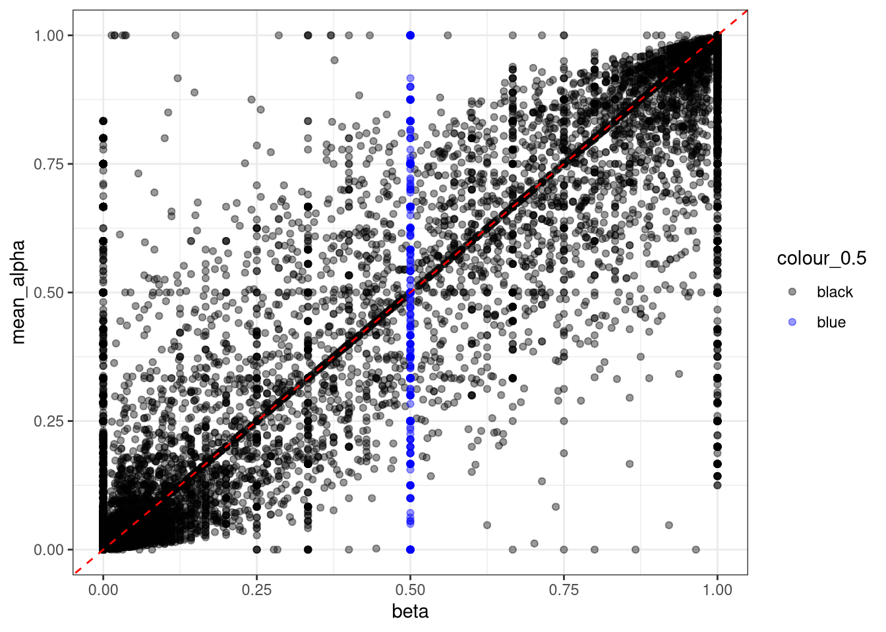
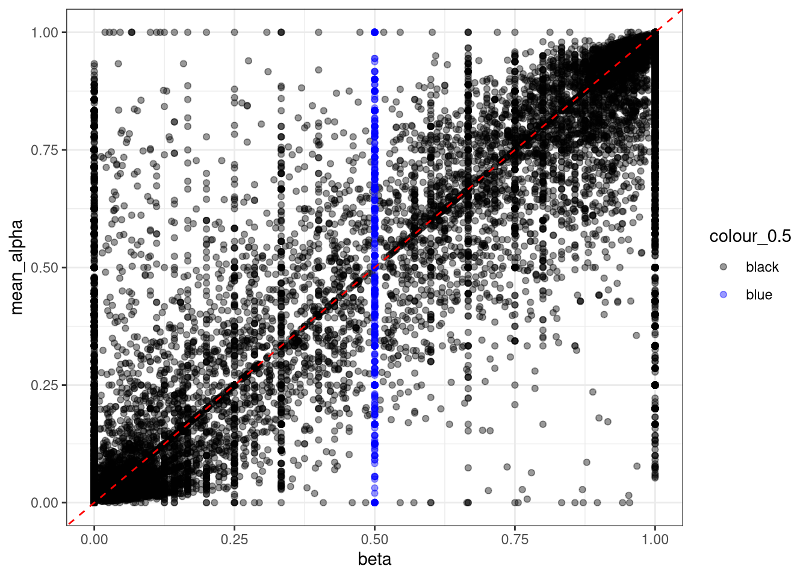
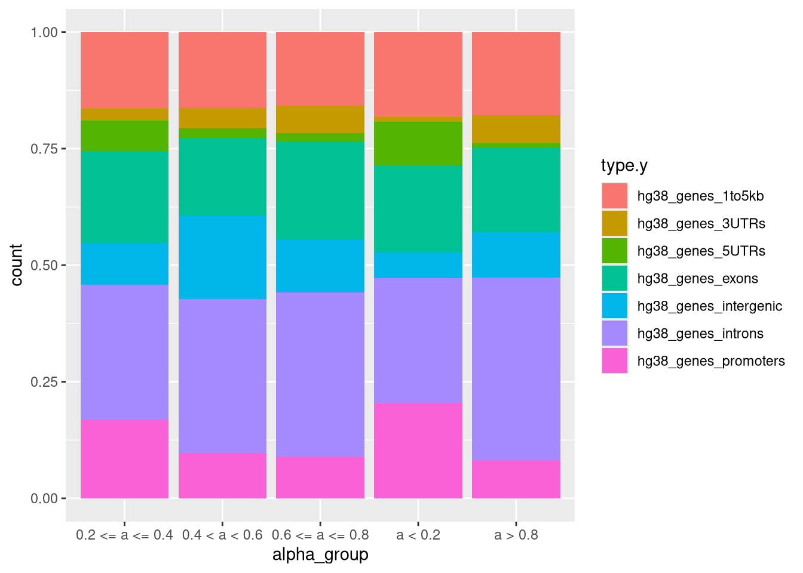
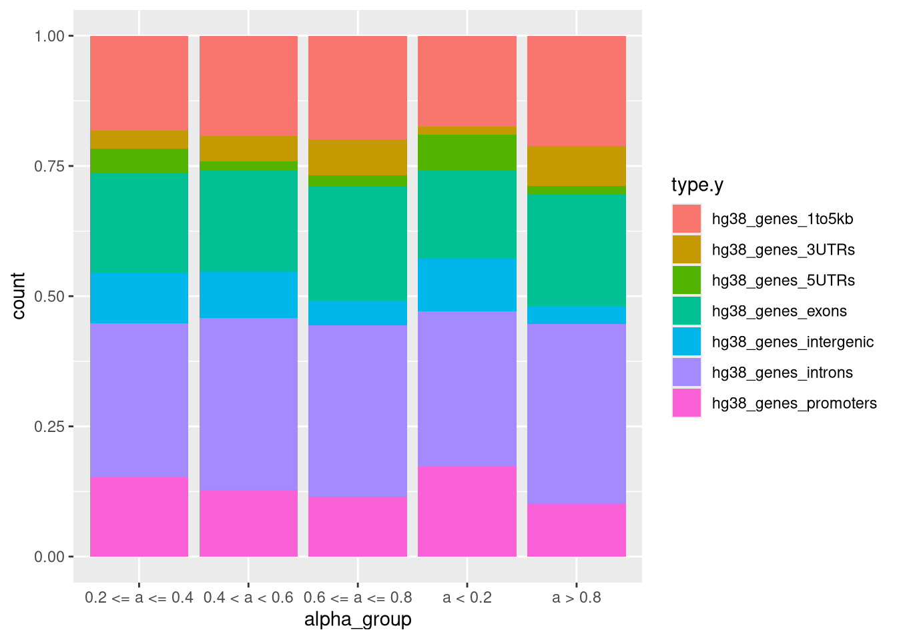
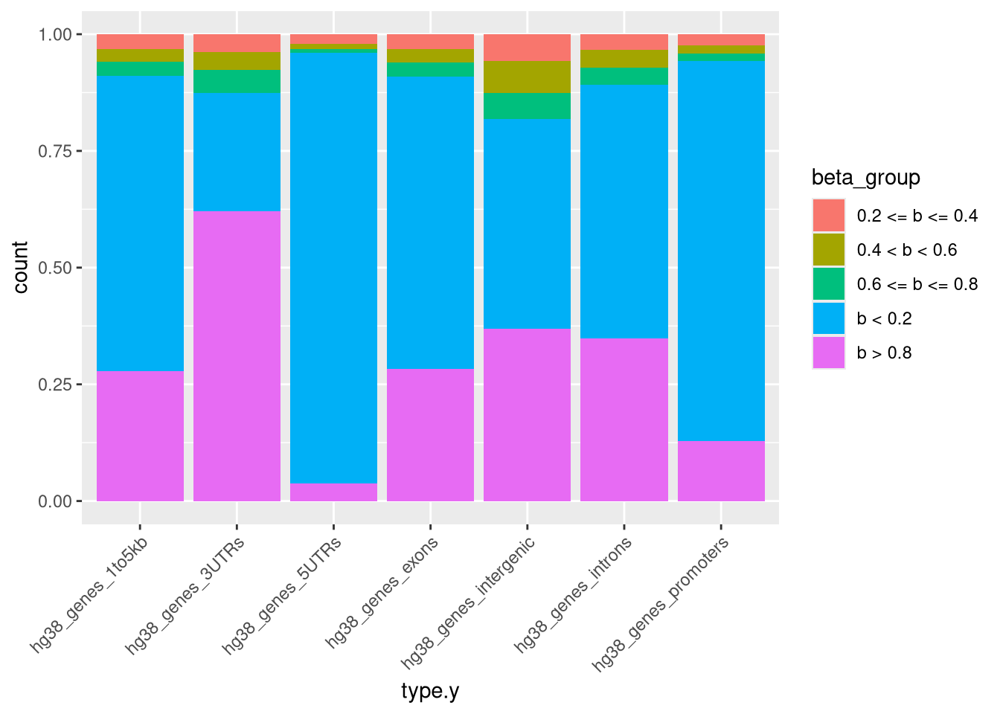
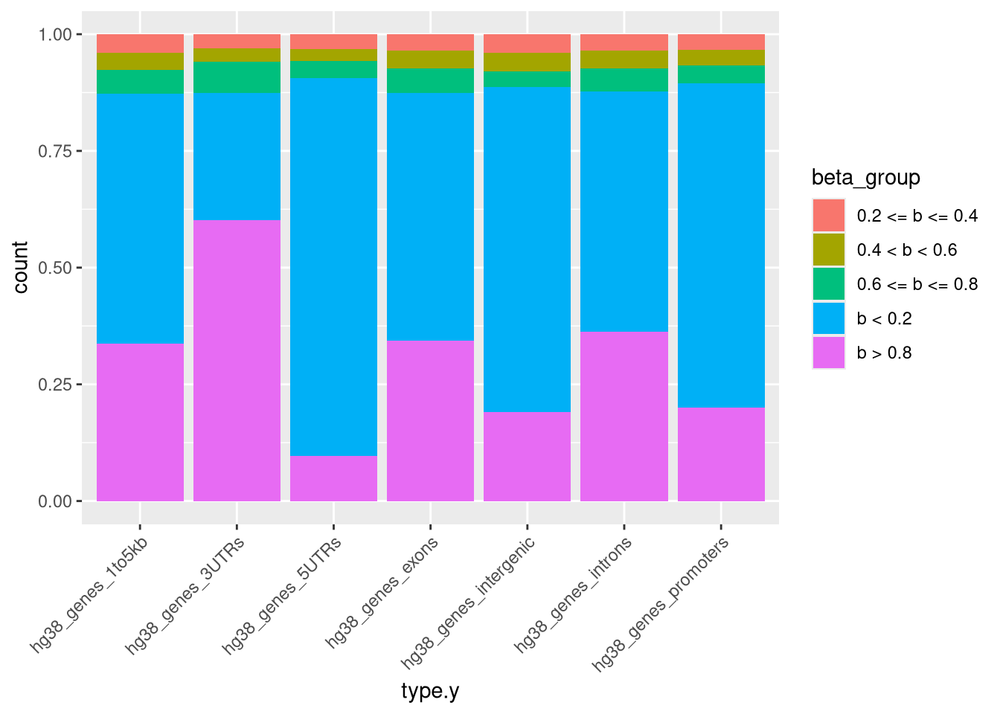
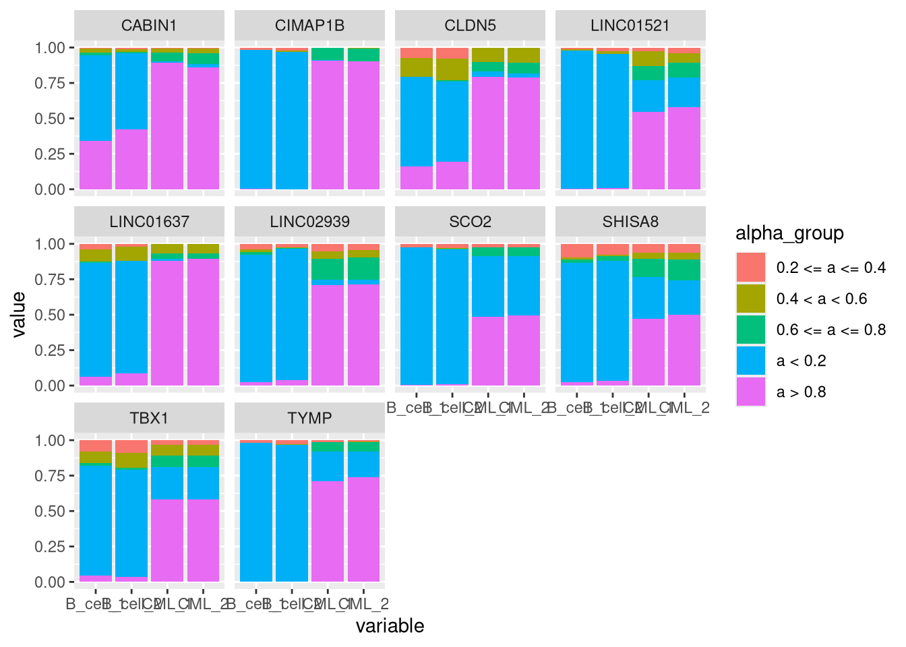
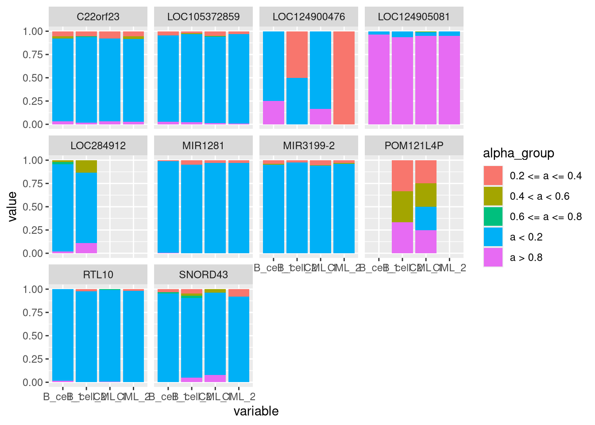

Last updated: 2026-02-25
Checks: 7 0
Knit directory: methyl_nano_cf/analysis/
This reproducible R Markdown analysis was created with workflowr (version 1.7.1). The Checks tab describes the reproducibility checks that were applied when the results were created. The Past versions tab lists the development history.
Great! Since the R Markdown file has been committed to the Git repository, you know the exact version of the code that produced these results.
Great job! The global environment was empty. Objects defined in the global environment can affect the analysis in your R Markdown file in unknown ways. For reproduciblity it’s best to always run the code in an empty environment.
The command set.seed(20250606) was run prior to running
the code in the R Markdown file. Setting a seed ensures that any results
that rely on randomness, e.g. subsampling or permutations, are
reproducible.
Great job! Recording the operating system, R version, and package versions is critical for reproducibility.
Nice! There were no cached chunks for this analysis, so you can be confident that you successfully produced the results during this run.
Great job! Using relative paths to the files within your workflowr project makes it easier to run your code on other machines.
Great! You are using Git for version control. Tracking code development and connecting the code version to the results is critical for reproducibility.
The results in this page were generated with repository version 0230777. See the Past versions tab to see a history of the changes made to the R Markdown and HTML files.
Note that you need to be careful to ensure that all relevant files for
the analysis have been committed to Git prior to generating the results
(you can use wflow_publish or
wflow_git_commit). workflowr only checks the R Markdown
file, but you know if there are other scripts or data files that it
depends on. Below is the status of the Git repository when the results
were generated:
Ignored files:
Ignored: .Rproj.user/
Untracked files:
Untracked: renv.lock
Untracked: renv/
Unstaged changes:
Modified: .Rprofile
Modified: _workflowr.yml
Modified: analysis/diffAlphaUsageDiffMeth.Rmd
Modified: analysis/index.Rmd
Note that any generated files, e.g. HTML, png, CSS, etc., are not included in this status report because it is ok for generated content to have uncommitted changes.
These are the previous versions of the repository in which changes were
made to the R Markdown
(analysis/differentialAlphaUsage.Rmd) and HTML
(docs/differentialAlphaUsage.html) files. If you’ve
configured a remote Git repository (see ?wflow_git_remote),
click on the hyperlinks in the table below to view the files as they
were in that past version.
| File | Version | Author | Date | Message |
|---|---|---|---|---|
| Rmd | 0230777 | caitlinpage | 2026-02-25 | wflow_publish("differentialAlphaUsage.Rmd") |
| Rmd | 7b6450f | caitlinpage | 2026-02-25 | tidying up |
| Rmd | ca312bd | caitlinpage | 2026-02-25 | able to semi interpret the results and plot - looks ok |
| Rmd | c7a43f1 | caitlinpage | 2026-02-23 | try dtu but with groups of alpha |
library(annotatr)Warning: replacing previous import 'S4Arrays::makeNindexFromArrayViewport' by
'DelayedArray::makeNindexFromArrayViewport' when loading 'SummarizedExperiment'library(data.table)
library(plyranges)Loading required package: BiocGenerics
Attaching package: 'BiocGenerics'The following objects are masked from 'package:stats':
IQR, mad, sd, var, xtabsThe following objects are masked from 'package:base':
anyDuplicated, aperm, append, as.data.frame, basename, cbind,
colnames, dirname, do.call, duplicated, eval, evalq, Filter, Find,
get, grep, grepl, intersect, is.unsorted, lapply, Map, mapply,
match, mget, order, paste, pmax, pmax.int, pmin, pmin.int,
Position, rank, rbind, Reduce, rownames, sapply, saveRDS, setdiff,
table, tapply, union, unique, unsplit, which.max, which.minLoading required package: IRangesLoading required package: S4VectorsLoading required package: stats4
Attaching package: 'S4Vectors'The following objects are masked from 'package:data.table':
first, secondThe following object is masked from 'package:utils':
findMatchesThe following objects are masked from 'package:base':
expand.grid, I, unname
Attaching package: 'IRanges'The following object is masked from 'package:data.table':
shiftLoading required package: GenomicRangesLoading required package: GenomeInfoDb
Attaching package: 'plyranges'The following object is masked from 'package:IRanges':
sliceThe following object is masked from 'package:data.table':
betweenThe following object is masked from 'package:stats':
filterlibrary(tidyr)
Attaching package: 'tidyr'The following object is masked from 'package:S4Vectors':
expandlibrary(stringr)
library(dplyr)
Attaching package: 'dplyr'The following objects are masked from 'package:plyranges':
between, n, n_distinctThe following objects are masked from 'package:GenomicRanges':
intersect, setdiff, unionThe following object is masked from 'package:GenomeInfoDb':
intersectThe following objects are masked from 'package:IRanges':
collapse, desc, intersect, setdiff, slice, unionThe following objects are masked from 'package:S4Vectors':
first, intersect, rename, setdiff, setequal, unionThe following objects are masked from 'package:BiocGenerics':
combine, intersect, setdiff, unionThe following objects are masked from 'package:data.table':
between, first, lastThe following objects are masked from 'package:stats':
filter, lagThe following objects are masked from 'package:base':
intersect, setdiff, setequal, unionlibrary(ggplot2)
library(edgeR)Loading required package: limma
Attaching package: 'limma'The following object is masked from 'package:BiocGenerics':
plotMAcg_sites <- cbind(data.frame(Biostrings::matchPattern("CG", BSgenome.Hsapiens.UCSC.hg38::BSgenome.Hsapiens.UCSC.hg38[["chr22"]])), seqnames = "chr22") %>%
mutate(pos = paste0(seqnames, "-", start)) %>%
relocate(pos, seqnames)Warning in .local(x, row.names, optional, ...): 'optional' argument was ignoredcg_sites$index <- 1:nrow(cg_sites)source("../code/processData.R")
for_beta_all <- readRDS("/researchers/caitlin.page/cf_nano/r_output/rrbs_alpha_beta.rds")
#for_beta <- readRDS("../output/cluster_files/rrbs_alpha_beta.rds")
for_beta <- for_beta_all %>% filter(seqnames == "chr22")
rrbs_for_beta_pat <- pat_for_wgbs(for_beta)`summarise()` has grouped output by 'seqnames', 'start_pos', 'meth_pattern',
'alpha', 'end_pos'. You can override using the `.groups` argument.for_beta <- for_beta %>% group_by(start) %>% mutate(coverage = n(), mean_alpha = mean(alpha)) %>% ungroup() %>% data.frame()
just_beta <- for_beta %>% distinct(start, beta, coverage, mean_alpha) %>% .[order(.$start),]
for_beta_genes <- find_overlaps(as_granges(for_beta), as_granges(annotations)) %>% data.frame()source("../code/processData.R")
gm12878_2 <- readRDS("/researchers/caitlin.page/cf_nano/r_output/rrbs_alpha_beta_rep2.rds")
#for_beta <- readRDS("../output/cluster_files/rrbs_alpha_beta.rds")
gm12878_2_chr22 <- gm12878_2 %>% filter(seqnames == "chr22")
gm12878_2_chr22 <- gm12878_2_chr22 %>% group_by(start) %>% mutate(coverage = n(), mean_alpha = mean(alpha)) %>% ungroup() %>% data.frame()source("../code/processData.R")
k562 <- readRDS("/researchers/caitlin.page/cf_nano/r_output/k562_rep1.rds")
k562 <- k562 %>% as_granges() %>% data.frame()
k562_chr22 <- k562 %>% filter(seqnames == "chr22")
k562_chr22 <- k562_chr22 %>% group_by(start) %>% mutate(coverage = n(), mean_alpha = mean(alpha)) %>% ungroup() %>% data.frame()source("../code/processData.R")
k562_2 <- readRDS("/researchers/caitlin.page/cf_nano/r_output/k562_rep2.rds")
k562_2 <- k562_2 %>% as_granges() %>% data.frame()
k562_2_chr22 <- k562_2 %>% filter(seqnames == "chr22")
k562_2_chr22 <- k562_2_chr22 %>% group_by(start) %>% mutate(coverage = n(), mean_alpha = mean(alpha)) %>% ungroup() %>% data.frame()annots <- c("hg38_cpgs")
annotations <- annotatr::build_annotations(genome = 'hg38', annotations = annots)Building CpG islands...Building CpG shores...Building CpG shelves...Building inter-CpG-islands...seqs <- annotations %>% data.frame() %>% distinct(seqnames) %>% .[1:22,]
annotations <- annotations %>% data.frame() %>% filter(seqnames %in% seqs)
for_beta <- find_overlaps(as_granges(for_beta), as_granges(annotations)) %>% data.frame() %>%
mutate(cgi = ifelse(type == "hg38_cpg_islands", "island", "not_island"))
gm12878_2_chr22 <- find_overlaps(as_granges(gm12878_2_chr22), as_granges(annotations)) %>% data.frame() %>%
mutate(cgi = ifelse(type == "hg38_cpg_islands", "island", "not_island"))
k562_chr22 <- find_overlaps(as_granges(k562_chr22), as_granges(annotations)) %>% data.frame() %>%
mutate(cgi = ifelse(type == "hg38_cpg_islands", "island", "not_island"))Warning in .merge_two_Seqinfo_objects(x, y): Each of the 2 combined objects has sequence levels not in the other:
- in 'x': KI270900.1, KI270937.1, ML143355.1, GL000225.1, ML143376.1, GL000214.1, KI270733.1, GL000219.1, GL000216.2, GL000194.1, KI270442.1, KI270706.1, ML143371.1, KI270819.1, KI270724.1, ML143364.1, GL000255.2, GL000220.1, KI270728.1, KI270734.1, KN196484.1, KI270713.1, ML143375.1, KZ208906.1, KI270894.1, KZ208915.1, KI270723.1, KI270927.1, KI270924.1, KI270712.1, GL949752.1, KI270709.1, KQ759762.1, KI270808.1, KI270744.1, KI270784.1, KI270539.1, KZ208917.1, GL000254.2, KI270830.1, KI270879.1, KI270831.1, KI270832.1, KI270913.1, KV880766.1, ML143366.1, GL000251.2, KZ559109.1, KI270721.1, KI270842.1, GL000253.2, KV766193.1, KI270821.1, KV766196.1, KI270754.1, GL383533.1, KQ983258.1, KI270714.1, GL383563.3, KI270862.1, KI270772.1, GL000256.2, KI270722.1, KI270856.1, KI270905.1, ML143378.1, KV575244.1, KI270878.1, KI270903.1, KI270538.1, KZ208921.1, KI270797.1, KI270853.1, KI270749.1, KI270792.1, KV766198.1, KI270880.1, ML143380.1, KI270780.1, GL000008.2, KI270738.1, GL000218.1, GL383546.1, KI270824.1, GL383526.1, KI270753.1, KI270803.1, KZ559113.1, KI270732.1, KI270854.1, KV880763.1, KQ759759.1, GL383581.2, GL000221.1, KN196472.1, KI270731.1, KI270707.1, KI270835.1, KI270743.1, KI270857.1, GL383527.1, KI270871.1, KI270768.1, GL000258.2, KI270845.1, KI270901.1, GL000009.2, KI270745.1, GL383574.1, GL000213.1, KI270860.1, KQ458386.1, KI270926.1, KI270817.1, KI270746.1, KI270805.1, GL000257.2, KI270815.1, KI270742.1, KQ090022.1, KI270804.1, ML143367.1, KI270850.1, GL000252.2, KN196479.1, ML143374.1, KI270868.1, KI270774.1, KI270729.1, KI270816.1, GL383519.1, KI270827.1, GL383522.1, KI270750.1, KI270785.1, KI270719.1, KN538364.1, KI270725.1, KI270834.1, KI270836.1, GL000250.2, KI270811.1, KN538361.1, KI270708.1, KI270758.1, KI270793.1, KI270912.1, KZ559108.1, KZ208919.1, ML143373.1, KI270717.1, KI270438.1, KI270881.1, KI270812.1, GL383542.1, KQ031389.1, KZ559111.1, ML143377.1, KI270898.1, KI270760.1, KI270818.1, KI270870.1, KI270911.1, ML143372.1, GL383545.1, KI270848.1, KI270833.1, KV575243.1, KZ208908.1, GL877875.1, GL949747.2, GL000224.1, ML143345.1, KI270759.1, KI270767.1, KN538360.1, KQ983257.1, KN196487.1, KV880764.1, KI270791.1, KN538372.1, KI270934.1, KI270781.1, KI270873.1, KI270806.1, ML143347.1, KI270801.1, KI270736.1, KI270782.1, KI270908.1, KI270846.1, KV766199.1, KI270840.1, GL383579.2, GL949751.2, KZ208920.1, KQ090026.1, GL339449.2, KZ208922.1, KI270711.1, KI270467.1, KI270756.1, KI270893.1, GL000208.1, KI270751.1, KZ208912.1, KV880768.1, KI270779.1, KI270741.1, KZ208913.1, KV880765.1, GL383531.1, GL383583.2, KI270466.1, GL383573.1, KI270869.1, GL383571.1, KI270822.1, GL383566.1, KI270907.1, KI270710.1, KI270330.1, KI270863.1, KQ458383.1, KI270435.1, GL000205.2, KI270510.1, KI270938.1, GL383550.2, KN196473.1, KI270813.1, KI270735.1, KI270718.1, KI270311.1, KI270757.1, KI270304.1, KI270519.1, GL383556.1, KN196475.1, KI270739.1, GL949746.1, KZ208911.1, KI270720.1, KZ208914.1, KZ208916.1, KI270747.1, KI270783.1, KI270429.1, GL383572.1, GL383557.1, KI270521.1, KI270855.1, KI270776.1, KI270591.1, KI270809.1, KI270770.1, KI270904.1, KQ090021.1, KI270588.1, KI270844.1, ML143358.1, KQ090023.1, KI270310.1, KN538373.1, KQ458384.1, KN196474.1, KI270897.1, GL949753.2, KZ559103.1, JH159147.1, KQ090018.1, KQ031387.1, KI270861.1, KI270517.1, KI270530.1, KI270512.1, KQ090027.1, KQ458385.1, KI270763.1, KI270737.1, JH159146.1, KI270589.1, KI270396.1, KQ090028.1, KI270411.1, KZ559112.1, KI270337.1, KI270303.1, KQ983255.1, GL383578.2, KV766194.1, KI270507.1, GL383551.1, KI270919.1, KV766192.1, KQ983256.1, KI270448.1, KI270798.1, GL383518.1, KI270839.1, KI270790.1, KN538366.1, KI270906.1, KI270366.1, GL383530.1, KI270765.1, GL383532.1, KI270544.1, GL383555.2, KN196482.1, KQ090015.1, KI270866.1, KQ031388.1, KI270509.1, KI270583.1, JH636055.2, KZ208905.1, KI270847.1, KZ559107.1, KI270841.1, KI270849.1, KI270810.1, KI270340.1, KN538368.1, KI270465.1, KN196478.1
- in 'y': chr1_GL383518v1_alt, chr1_GL383519v1_alt, chr1_GL383520v2_alt, chr1_KI270759v1_alt, chr1_KI270760v1_alt, chr1_KI270761v1_alt, chr1_KI270762v1_alt, chr1_KI270763v1_alt, chr1_KI270764v1_alt, chr1_KI270765v1_alt, chr1_KI270766v1_alt, chr1_KI270892v1_alt, chr2_GL383521v1_alt, chr2_GL383522v1_alt, chr2_GL582966v2_alt, chr2_KI270767v1_alt, chr2_KI270768v1_alt, chr2_KI270769v1_alt, chr2_KI270770v1_alt, chr2_KI270771v1_alt, chr2_KI270772v1_alt, chr2_KI270773v1_alt, chr2_KI270774v1_alt, chr2_KI270775v1_alt, chr2_KI270776v1_alt, chr2_KI270893v1_alt, chr2_KI270894v1_alt, chr3_GL383526v1_alt, chr3_JH636055v2_alt, chr3_KI270777v1_alt, chr3_KI270778v1_alt, chr3_KI270779v1_alt, chr3_KI270780v1_alt, chr3_KI270781v1_alt, chr3_KI270782v1_alt, chr3_KI270783v1_alt, chr3_KI270784v1_alt, chr3_KI270895v1_alt, chr3_KI270924v1_alt, chr3_KI270934v1_alt, chr3_KI270935v1_alt, chr3_KI270936v1_alt, chr3_KI270937v1_alt, chr4_GL000257v2_alt, chr4_GL383527v1_alt, chr4_GL383528v1_alt, chr4_KI270785v1_alt, chr4_KI270786v1_alt, chr4_KI270787v1_alt, chr4_KI270788v1_alt, chr4_KI270789v1_alt, chr4_KI270790v1_alt, chr4_KI270896v1_alt, chr4_KI270925v1_alt, chr5_GL339449v2_alt, chr5_GL383530v1_alt, chr5_GL383531v1_alt, chr5_GL383532v1_alt, chr5_GL949742v1_alt, chr5_KI270791v1_alt, chr5_KI270792v1_alt, chr5_KI270793v1_alt, chr5_KI270794v1_alt, chr5_KI270795v1_alt, chr5_KI270796v1_alt, chr5_KI270897v1_alt, chr5_KI270898v1_alt, chr6_GL000250v2_alt, chr6_GL000251v2_alt, chr6_GL000252v2_alt, chr6_GL000253v2_alt, chr6_GL000254v2_alt, chr6_GL000255v2_alt, chr6_GL000256v2_alt, chr6_GL383533v1_alt, chr6_KB021644v2_alt, chr6_KI270758v1_alt, chr6_KI270797v1_alt, chr6_KI270798v1_alt, chr6_KI270799v1_alt, chr6_KI270800v1_alt, chr6_KI270801v1_alt, chr6_KI270802v1_alt, chr7_GL383534v2_alt, chr7_KI270803v1_alt, chr7_KI270804v1_alt, chr7_KI270805v1_alt, chr7_KI270806v1_alt, chr7_KI270807v1_alt, chr7_KI270808v1_alt, chr7_KI270809v1_alt, chr7_KI270899v1_alt, chr8_KI270810v1_alt, chr8_KI270811v1_alt, chr8_KI270812v1_alt, chr8_KI270813v1_alt, chr8_KI270814v1_alt, chr8_KI270815v1_alt, chr8_KI270816v1_alt, chr8_KI270817v1_alt, chr8_KI270818v1_alt, chr8_KI270819v1_alt, chr8_KI270820v1_alt, chr8_KI270821v1_alt, chr8_KI270822v1_alt, chr8_KI270900v1_alt, chr8_KI270901v1_alt, chr8_KI270926v1_alt, chr9_GL383539v1_alt, chr9_GL383540v1_alt, chr9_GL383541v1_alt, chr9_GL383542v1_alt, chr9_KI270823v1_alt, chr10_GL383545v1_alt, chr10_GL383546v1_alt, chr10_KI270824v1_alt, chr10_KI270825v1_alt, chr11_GL383547v1_alt, chr11_JH159136v1_alt, chr11_JH159137v1_alt, chr11_KI270826v1_alt, chr11_KI270827v1_alt, chr11_KI270829v1_alt, chr11_KI270830v1_alt, chr11_KI270831v1_alt, chr11_KI270832v1_alt, chr11_KI270902v1_alt, chr11_KI270903v1_alt, chr11_KI270927v1_alt, chr12_GL383549v1_alt, chr12_GL383550v2_alt, chr12_GL383551v1_alt, chr12_GL383552v1_alt, chr12_GL383553v2_alt, chr12_GL877875v1_alt, chr12_GL877876v1_alt, chr12_KI270833v1_alt, chr12_KI270834v1_alt, chr12_KI270835v1_alt, chr12_KI270836v1_alt, chr12_KI270837v1_alt, chr12_KI270904v1_alt, chr13_KI270838v1_alt, chr13_KI270839v1_alt, chr13_KI270840v1_alt, chr13_KI270841v1_alt, chr13_KI270842v1_alt, chr13_KI270843v1_alt, chr14_KI270844v1_alt, chr14_KI270845v1_alt, chr14_KI270846v1_alt, chr14_KI270847v1_alt, chr15_GL383554v1_alt, chr15_GL383555v2_alt, chr15_KI270848v1_alt, chr15_KI270849v1_alt, chr15_KI270850v1_alt, chr15_KI270851v1_alt, chr15_KI270852v1_alt, chr15_KI270905v1_alt, chr15_KI270906v1_alt, chr16_GL383556v1_alt, chr16_GL383557v1_alt, chr16_KI270853v1_alt, chr16_KI270854v1_alt, chr16_KI270855v1_alt, chr16_KI270856v1_alt, chr17_GL000258v2_alt, chr17_GL383563v3_alt, chr17_GL383564v2_alt, chr17_GL383565v1_alt, chr17_GL383566v1_alt, chr17_JH159146v1_alt, chr17_JH159147v1_alt, chr17_JH159148v1_alt, chr17_KI270857v1_alt, chr17_KI270858v1_alt, chr17_KI270859v1_alt, chr17_KI270860v1_alt, chr17_KI270861v1_alt, chr17_KI270862v1_alt, chr17_KI270907v1_alt, chr17_KI270908v1_alt, chr17_KI270909v1_alt, chr17_KI270910v1_alt, chr18_GL383567v1_alt, chr18_GL383568v1_alt, chr18_GL383569v1_alt, chr18_GL383570v1_alt, chr18_GL383571v1_alt, chr18_GL383572v1_alt, chr18_KI270863v1_alt, chr18_KI270864v1_alt, chr18_KI270911v1_alt, chr18_KI270912v1_alt, chr19_GL0k562_2_chr22 <- find_overlaps(as_granges(k562_2_chr22), as_granges(annotations)) %>% data.frame() %>%
mutate(cgi = ifelse(type == "hg38_cpg_islands", "island", "not_island"))Warning in .merge_two_Seqinfo_objects(x, y): Each of the 2 combined objects has sequence levels not in the other:
- in 'x': GL000225.1, ML143378.1, KI270879.1, KI270744.1, GL000216.2, KI270442.1, KI270723.1, GL000220.1, KI270722.1, ML143364.1, KI270713.1, KI270734.1, GL000214.1, KI270856.1, KI270724.1, KZ208915.1, ML143380.1, GL000255.2, KI270927.1, KI270873.1, KI270733.1, GL000194.1, KI270832.1, KI270742.1, ML143355.1, KI270834.1, GL000219.1, KV880766.1, KI270721.1, KZ208921.1, GL949752.1, KI270784.1, KI270712.1, KZ559109.1, KV766196.1, KQ983258.1, ML143372.1, KI270803.1, GL383563.3, KI270819.1, KV575244.1, KZ208906.1, KI270709.1, KI270937.1, KI270768.1, KI270831.1, KI270878.1, KI270853.1, KI270708.1, KI270913.1, KI270762.1, KI270749.1, KI270830.1, KI270821.1, KI270842.1, KQ759762.1, KI270894.1, KI270805.1, KI270728.1, KI270857.1, KI270754.1, KI270900.1, KI270905.1, KI270824.1, KQ759759.1, GL000218.1, KI270893.1, KI270772.1, KI270924.1, KI270732.1, ML143375.1, KI270706.1, KI270792.1, GL000251.2, KV766198.1, GL949746.1, GL000256.2, GL000254.2, GL000258.2, ML143376.1, KI270714.1, KI270808.1, KI270870.1, GL383546.1, KI270912.1, GL000257.2, KI270880.1, KZ559103.1, KN538369.1, KI270729.1, KV880763.1, KI270539.1, KI270835.1, KI270811.1, ML143371.1, KI270845.1, KN196472.1, KV766193.1, KI270855.1, ML143367.1, KI270780.1, KN196484.1, KI270743.1, KI270848.1, KQ090022.1, KI270898.1, KI270851.1, KI270804.1, KZ559113.1, KZ208917.1, ML143377.1, KI270862.1, KI270815.1, KI270797.1, KI270753.1, GL383532.1, KI270774.1, KI270817.1, GL000253.2, KZ559108.1, GL000252.2, GL000221.1, KI270745.1, KI270871.1, GL383533.1, KN538360.1, KN538361.1, KI270903.1, GL000250.2, KQ031389.1, KI270926.1, KQ458386.1, KN196479.1, KI270717.1, GL383526.1, KI270860.1, KZ208912.1, KI270816.1, KI270707.1, KI270854.1, GL383534.2, KQ090026.1, KI270719.1, KI270438.1, KI270793.1, KV575243.1, GL000213.1, KZ208919.1, KI270868.1, KQ031385.1, KN196486.1, KI270840.1, KI270901.1, KI270806.1, KN538364.1, GL000009.2, KI270785.1, KI270935.1, ML143366.1, KZ208908.1, KI270519.1, KI270731.1, KI270791.1, KZ559111.1, KZ208920.1, GL949747.2, KQ983256.1, GL383579.2, KQ090023.1, ML143359.1, KI270818.1, KI270758.1, KV880768.1, ML143374.1, KI270750.1, KI270827.1, KI270850.1, KI270907.1, GL383527.1, GL339449.2, KI270936.1, KI270836.1, KI270725.1, KN538371.1, GL000008.2, KQ090024.1, KI270846.1, KI270833.1, KQ090016.1, KI270757.1, KI270738.1, GL000224.1, GL383545.1, GL383581.2, KI270825.1, KI270847.1, KI270736.1, KI270822.1, KI270751.1, KV575258.1, GL383557.1, KQ458383.1, KI270710.1, KZ208904.1, KI270906.1, KZ208910.1, KI270876.1, KV575249.1, KI270897.1, KI270875.1, GL949751.2, KZ559101.1, KQ031388.1, KI270781.1, KV766194.1, KI270304.1, KN196481.1, GL949753.2, KI270883.1, KI270908.1, KI270904.1, KZ208916.1, KZ208914.1, KZ559115.1, KZ559102.1, GL949749.2, KI270766.1, KQ090015.1, KI270938.1, JH636055.2, KI270858.1, KI270874.1, GL949748.2, KI270770.1, KN538368.1, GL383575.2, KI270763.1, KI270790.1, GL383554.1, GL383528.1, KN538372.1, ML143342.1, KV766192.1, KN538370.1, KI270934.1, KI270895.1, KQ031383.1, KZ208911.1, ML143370.1, GL383551.1, GL383583.2, KI270841.1, KI270829.1, KI270869.1, KN196480.1, KV766195.1, ML143361.1, GL383553.2, KI270715.1, KI270777.1, ML143344.1, KI270922.1, ML143368.1, ML143347.1, ML143349.1, KQ090027.1, GL383518.1, GL383541.1, KQ031390.1, KI270917.1, GL383574.1, KI270861.1, KI270877.1, KZ559107.1, KZ559110.1
- in 'y': chr1_GL383518v1_alt, chr1_GL383519v1_alt, chr1_GL383520v2_alt, chr1_KI270759v1_alt, chr1_KI270760v1_alt, chr1_KI270761v1_alt, chr1_KI270762v1_alt, chr1_KI270763v1_alt, chr1_KI270764v1_alt, chr1_KI270765v1_alt, chr1_KI270766v1_alt, chr1_KI270892v1_alt, chr2_GL383521v1_alt, chr2_GL383522v1_alt, chr2_GL582966v2_alt, chr2_KI270767v1_alt, chr2_KI270768v1_alt, chr2_KI270769v1_alt, chr2_KI270770v1_alt, chr2_KI270771v1_alt, chr2_KI270772v1_alt, chr2_KI270773v1_alt, chr2_KI270774v1_alt, chr2_KI270775v1_alt, chr2_KI270776v1_alt, chr2_KI270893v1_alt, chr2_KI270894v1_alt, chr3_GL383526v1_alt, chr3_JH636055v2_alt, chr3_KI270777v1_alt, chr3_KI270778v1_alt, chr3_KI270779v1_alt, chr3_KI270780v1_alt, chr3_KI270781v1_alt, chr3_KI270782v1_alt, chr3_KI270783v1_alt, chr3_KI270784v1_alt, chr3_KI270895v1_alt, chr3_KI270924v1_alt, chr3_KI270934v1_alt, chr3_KI270935v1_alt, chr3_KI270936v1_alt, chr3_KI270937v1_alt, chr4_GL000257v2_alt, chr4_GL383527v1_alt, chr4_GL383528v1_alt, chr4_KI270785v1_alt, chr4_KI270786v1_alt, chr4_KI270787v1_alt, chr4_KI270788v1_alt, chr4_KI270789v1_alt, chr4_KI270790v1_alt, chr4_KI270896v1_alt, chr4_KI270925v1_alt, chr5_GL339449v2_alt, chr5_GL383530v1_alt, chr5_GL383531v1_alt, chr5_GL383532v1_alt, chr5_GL949742v1_alt, chr5_KI270791v1_alt, chr5_KI270792v1_alt, chr5_KI270793v1_alt, chr5_KI270794v1_alt, chr5_KI270795v1_alt, chr5_KI270796v1_alt, chr5_KI270897v1_alt, chr5_KI270898v1_alt, chr6_GL000250v2_alt, chr6_GL000251v2_alt, chr6_GL000252v2_alt, chr6_GL000253v2_alt, chr6_GL000254v2_alt, chr6_GL000255v2_alt, chr6_GL000256v2_alt, chr6_GL383533v1_alt, chr6_KB021644v2_alt, chr6_KI270758v1_alt, chr6_KI270797v1_alt, chr6_KI270798v1_alt, chr6_KI270799v1_alt, chr6_KI270800v1_alt, chr6_KI270801v1_alt, chr6_KI270802v1_alt, chr7_GL383534v2_alt, chr7_KI270803v1_alt, chr7_KI270804v1_alt, chr7_KI270805v1_alt, chr7_KI270806v1_alt, chr7_KI270807v1_alt, chr7_KI270808v1_alt, chr7_KI270809v1_alt, chr7_KI270899v1_alt, chr8_KI270810v1_alt, chr8_KI270811v1_alt, chr8_KI270812v1_alt, chr8_KI270813v1_alt, chr8_KI270814v1_alt, chr8_KI270815v1_alt, chr8_KI270816v1_alt, chr8_KI270817v1_alt, chr8_KI270818v1_alt, chr8_KI270819v1_alt, chr8_KI270820v1_alt, chr8_KI270821v1_alt, chr8_KI270822v1_alt, chr8_KI270900v1_alt, chr8_KI270901v1_alt, chr8_KI270926v1_alt, chr9_GL383539v1_alt, chr9_GL383540v1_alt, chr9_GL383541v1_alt, chr9_GL383542v1_alt, chr9_KI270823v1_alt, chr10_GL383545v1_alt, chr10_GL383546v1_alt, chr10_KI270824v1_alt, chr10_KI270825v1_alt, chr11_GL383547v1_alt, chr11_JH159136v1_alt, chr11_JH159137v1_alt, chr11_KI270826v1_alt, chr11_KI270827v1_alt, chr11_KI270829v1_alt, chr11_KI270830v1_alt, chr11_KI270831v1_alt, chr11_KI270832v1_alt, chr11_KI270902v1_alt, chr11_KI270903v1_alt, chr11_KI270927v1_alt, chr12_GL383549v1_alt, chr12_GL383550v2_alt, chr12_GL383551v1_alt, chr12_GL383552v1_alt, chr12_GL383553v2_alt, chr12_GL877875v1_alt, chr12_GL877876v1_alt, chr12_KI270833v1_alt, chr12_KI270834v1_alt, chr12_KI270835v1_alt, chr12_KI270836v1_alt, chr12_KI270837v1_alt, chr12_KI270904v1_alt, chr13_KI270838v1_alt, chr13_KI270839v1_alt, chr13_KI270840v1_alt, chr13_KI270841v1_alt, chr13_KI270842v1_alt, chr13_KI270843v1_alt, chr14_KI270844v1_alt, chr14_KI270845v1_alt, chr14_KI270846v1_alt, chr14_KI270847v1_alt, chr15_GL383554v1_alt, chr15_GL383555v2_alt, chr15_KI270848v1_alt, chr15_KI270849v1_alt, chr15_KI270850v1_alt, chr15_KI270851v1_alt, chr15_KI270852v1_alt, chr15_KI270905v1_alt, chr15_KI270906v1_alt, chr16_GL383556v1_alt, chr16_GL383557v1_alt, chr16_KI270853v1_alt, chr16_KI270854v1_alt, chr16_KI270855v1_alt, chr16_KI270856v1_alt, chr17_GL000258v2_alt, chr17_GL383563v3_alt, chr17_GL383564v2_alt, chr17_GL383565v1_alt, chr17_GL383566v1_alt, chr17_JH159146v1_alt, chr17_JH159147v1_alt, chr17_JH159148v1_alt, chr17_KI270857v1_alt, chr17_KI270858v1_alt, chr17_KI270859v1_alt, chr17_KI270860v1_alt, chr17_KI270861v1_alt, chr17_KI270862v1_alt, chr17_KI270907v1_alt, chr17_KI270908v1_alt, chr17_KI270909v1_alt, chr17_KI270910v1_alt, chr18_GL383567v1_alt, chr18_GL383568v1_alt, chr18_GL383569v1_alt, chr18_GL383570v1_alt, chr18_GL383571v1_alt, chr18_GL383572v1_alt, chr18_KI270863v1_alt, chr18_KI270864v1_alt, chr18_KI270911v1_alt, chr18_KI270912v1_alt, chr19_GL000209v2_alt, chr19_GL383573v1_alt, chr19_GL383574v1_alt, chr19_GL383575v2_alt, chr19_GL383576v1_alt, chr19_GL949746v1_alt, chr19_GL949747v2_alt, chr19_GL949748v2_alt, chr19_GL949749v2_alt, chr19_GL949750v2_alt, chr19_GL949751v2_alt, chr19_GL949752v1_alt, chr19_GL949753v2_alt, chr19_KI270865v1_alt, chr19_KI270866v1_alt, chr19_KI270867v1_alt, chr19_KI270868v1_alt, chr19_KI270882v1_alt, chr19_KI270883v1_alt, chr19_KI270884v1_alt, chr19_KI270885v1_alt, chr19_KI270886v1_alt, chr19_KI270887v1_alt, chr19_KI270888v1_alt, chr19_KI270889v1_alt, chr19_KI270890v1_alt, chr19_KI270891v1_alt, chr19_KI270914v1_alt, chr19annots <- c("hg38_basicgenes", "hg38_genes_intergenic")
annotations <- annotatr::build_annotations(genome = 'hg38', annotations = annots)Loading required package: GenomicFeaturesLoading required package: AnnotationDbiLoading required package: BiobaseWelcome to Bioconductor
Vignettes contain introductory material; view with
'browseVignettes()'. To cite Bioconductor, see
'citation("Biobase")', and for packages 'citation("pkgname")'.
Attaching package: 'AnnotationDbi'The following object is masked from 'package:dplyr':
selectThe following object is masked from 'package:plyranges':
select'select()' returned 1:1 mapping between keys and columnsBuilding promoters...Building 1to5kb upstream of TSS...Building intergenic...Building 5UTRs...Building 3UTRs...Building exons...Building introns...seqs <- annotations %>% data.frame() %>% distinct(seqnames) %>% .[1:22,]
annotations <- annotations %>% data.frame() %>% filter(seqnames %in% seqs)
annotations %>% group_by(type) %>% summarise(n=n())# A tibble: 7 × 2
type n
<chr> <int>
1 hg38_genes_1to5kb 244912
2 hg38_genes_3UTRs 204002
3 hg38_genes_5UTRs 168322
4 hg38_genes_exons 1606422
5 hg38_genes_intergenic 21513
6 hg38_genes_introns 1361510
7 hg38_genes_promoters 244912for_beta_genes <- find_overlaps(as_granges(for_beta), as_granges(annotations)) %>% data.frame()
gm12878_2_chr22_genes <- find_overlaps(as_granges(gm12878_2_chr22), as_granges(annotations)) %>% data.frame()
k562_chr22_genes <- find_overlaps(as_granges(k562_chr22), as_granges(annotations)) %>% data.frame()Warning in .merge_two_Seqinfo_objects(x, y): Each of the 2 combined objects has sequence levels not in the other:
- in 'x': KI270900.1, KI270937.1, ML143355.1, GL000225.1, ML143376.1, GL000214.1, KI270733.1, GL000219.1, GL000216.2, GL000194.1, KI270442.1, KI270706.1, ML143371.1, KI270819.1, KI270724.1, ML143364.1, GL000255.2, GL000220.1, KI270728.1, KI270734.1, KN196484.1, KI270713.1, ML143375.1, KZ208906.1, KI270894.1, KZ208915.1, KI270723.1, KI270927.1, KI270924.1, KI270712.1, GL949752.1, KI270709.1, KQ759762.1, KI270808.1, KI270744.1, KI270784.1, KI270539.1, KZ208917.1, GL000254.2, KI270830.1, KI270879.1, KI270831.1, KI270832.1, KI270913.1, KV880766.1, ML143366.1, GL000251.2, KZ559109.1, KI270721.1, KI270842.1, GL000253.2, KV766193.1, KI270821.1, KV766196.1, KI270754.1, GL383533.1, KQ983258.1, KI270714.1, GL383563.3, KI270862.1, KI270772.1, GL000256.2, KI270722.1, KI270856.1, KI270905.1, ML143378.1, KV575244.1, KI270878.1, KI270903.1, KI270538.1, KZ208921.1, KI270797.1, KI270853.1, KI270749.1, KI270792.1, KV766198.1, KI270880.1, ML143380.1, KI270780.1, GL000008.2, KI270738.1, GL000218.1, GL383546.1, KI270824.1, GL383526.1, KI270753.1, KI270803.1, KZ559113.1, KI270732.1, KI270854.1, KV880763.1, KQ759759.1, GL383581.2, GL000221.1, KN196472.1, KI270731.1, KI270707.1, KI270835.1, KI270743.1, KI270857.1, GL383527.1, KI270871.1, KI270768.1, GL000258.2, KI270845.1, KI270901.1, GL000009.2, KI270745.1, GL383574.1, GL000213.1, KI270860.1, KQ458386.1, KI270926.1, KI270817.1, KI270746.1, KI270805.1, GL000257.2, KI270815.1, KI270742.1, KQ090022.1, KI270804.1, ML143367.1, KI270850.1, GL000252.2, KN196479.1, ML143374.1, KI270868.1, KI270774.1, KI270729.1, KI270816.1, GL383519.1, KI270827.1, GL383522.1, KI270750.1, KI270785.1, KI270719.1, KN538364.1, KI270725.1, KI270834.1, KI270836.1, GL000250.2, KI270811.1, KN538361.1, KI270708.1, KI270758.1, KI270793.1, KI270912.1, KZ559108.1, KZ208919.1, ML143373.1, KI270717.1, KI270438.1, KI270881.1, KI270812.1, GL383542.1, KQ031389.1, KZ559111.1, ML143377.1, KI270898.1, KI270760.1, KI270818.1, KI270870.1, KI270911.1, ML143372.1, GL383545.1, KI270848.1, KI270833.1, KV575243.1, KZ208908.1, GL877875.1, GL949747.2, GL000224.1, ML143345.1, KI270759.1, KI270767.1, KN538360.1, KQ983257.1, KN196487.1, KV880764.1, KI270791.1, KN538372.1, KI270934.1, KI270781.1, KI270873.1, KI270806.1, ML143347.1, KI270801.1, KI270736.1, KI270782.1, KI270908.1, KI270846.1, KV766199.1, KI270840.1, GL383579.2, GL949751.2, KZ208920.1, KQ090026.1, GL339449.2, KZ208922.1, KI270711.1, KI270467.1, KI270756.1, KI270893.1, GL000208.1, KI270751.1, KZ208912.1, KV880768.1, KI270779.1, KI270741.1, KZ208913.1, KV880765.1, GL383531.1, GL383583.2, KI270466.1, GL383573.1, KI270869.1, GL383571.1, KI270822.1, GL383566.1, KI270907.1, KI270710.1, KI270330.1, KI270863.1, KQ458383.1, KI270435.1, GL000205.2, KI270510.1, KI270938.1, GL383550.2, KN196473.1, KI270813.1, KI270735.1, KI270718.1, KI270311.1, KI270757.1, KI270304.1, KI270519.1, GL383556.1, KN196475.1, KI270739.1, GL949746.1, KZ208911.1, KI270720.1, KZ208914.1, KZ208916.1, KI270747.1, KI270783.1, KI270429.1, GL383572.1, GL383557.1, KI270521.1, KI270855.1, KI270776.1, KI270591.1, KI270809.1, KI270770.1, KI270904.1, KQ090021.1, KI270588.1, KI270844.1, ML143358.1, KQ090023.1, KI270310.1, KN538373.1, KQ458384.1, KN196474.1, KI270897.1, GL949753.2, KZ559103.1, JH159147.1, KQ090018.1, KQ031387.1, KI270861.1, KI270517.1, KI270530.1, KI270512.1, KQ090027.1, KQ458385.1, KI270763.1, KI270737.1, JH159146.1, KI270589.1, KI270396.1, KQ090028.1, KI270411.1, KZ559112.1, KI270337.1, KI270303.1, KQ983255.1, GL383578.2, KV766194.1, KI270507.1, GL383551.1, KI270919.1, KV766192.1, KQ983256.1, KI270448.1, KI270798.1, GL383518.1, KI270839.1, KI270790.1, KN538366.1, KI270906.1, KI270366.1, GL383530.1, KI270765.1, GL383532.1, KI270544.1, GL383555.2, KN196482.1, KQ090015.1, KI270866.1, KQ031388.1, KI270509.1, KI270583.1, JH636055.2, KZ208905.1, KI270847.1, KZ559107.1, KI270841.1, KI270849.1, KI270810.1, KI270340.1, KN538368.1, KI270465.1, KN196478.1
- in 'y': chr1_GL383518v1_alt, chr1_GL383519v1_alt, chr1_GL383520v2_alt, chr1_KI270759v1_alt, chr1_KI270760v1_alt, chr1_KI270761v1_alt, chr1_KI270762v1_alt, chr1_KI270763v1_alt, chr1_KI270764v1_alt, chr1_KI270765v1_alt, chr1_KI270766v1_alt, chr1_KI270892v1_alt, chr2_GL383521v1_alt, chr2_GL383522v1_alt, chr2_GL582966v2_alt, chr2_KI270767v1_alt, chr2_KI270768v1_alt, chr2_KI270769v1_alt, chr2_KI270770v1_alt, chr2_KI270771v1_alt, chr2_KI270772v1_alt, chr2_KI270773v1_alt, chr2_KI270774v1_alt, chr2_KI270775v1_alt, chr2_KI270776v1_alt, chr2_KI270893v1_alt, chr2_KI270894v1_alt, chr3_GL383526v1_alt, chr3_JH636055v2_alt, chr3_KI270777v1_alt, chr3_KI270778v1_alt, chr3_KI270779v1_alt, chr3_KI270780v1_alt, chr3_KI270781v1_alt, chr3_KI270782v1_alt, chr3_KI270783v1_alt, chr3_KI270784v1_alt, chr3_KI270895v1_alt, chr3_KI270924v1_alt, chr3_KI270934v1_alt, chr3_KI270935v1_alt, chr3_KI270936v1_alt, chr3_KI270937v1_alt, chr4_GL000257v2_alt, chr4_GL383527v1_alt, chr4_GL383528v1_alt, chr4_KI270785v1_alt, chr4_KI270786v1_alt, chr4_KI270787v1_alt, chr4_KI270788v1_alt, chr4_KI270789v1_alt, chr4_KI270790v1_alt, chr4_KI270896v1_alt, chr4_KI270925v1_alt, chr5_GL339449v2_alt, chr5_GL383530v1_alt, chr5_GL383531v1_alt, chr5_GL383532v1_alt, chr5_GL949742v1_alt, chr5_KI270791v1_alt, chr5_KI270792v1_alt, chr5_KI270793v1_alt, chr5_KI270794v1_alt, chr5_KI270795v1_alt, chr5_KI270796v1_alt, chr5_KI270897v1_alt, chr5_KI270898v1_alt, chr6_GL000250v2_alt, chr6_GL000251v2_alt, chr6_GL000252v2_alt, chr6_GL000253v2_alt, chr6_GL000254v2_alt, chr6_GL000255v2_alt, chr6_GL000256v2_alt, chr6_GL383533v1_alt, chr6_KB021644v2_alt, chr6_KI270758v1_alt, chr6_KI270797v1_alt, chr6_KI270798v1_alt, chr6_KI270799v1_alt, chr6_KI270800v1_alt, chr6_KI270801v1_alt, chr6_KI270802v1_alt, chr7_GL383534v2_alt, chr7_KI270803v1_alt, chr7_KI270804v1_alt, chr7_KI270805v1_alt, chr7_KI270806v1_alt, chr7_KI270807v1_alt, chr7_KI270808v1_alt, chr7_KI270809v1_alt, chr7_KI270899v1_alt, chr8_KI270810v1_alt, chr8_KI270811v1_alt, chr8_KI270812v1_alt, chr8_KI270813v1_alt, chr8_KI270814v1_alt, chr8_KI270815v1_alt, chr8_KI270816v1_alt, chr8_KI270817v1_alt, chr8_KI270818v1_alt, chr8_KI270819v1_alt, chr8_KI270820v1_alt, chr8_KI270821v1_alt, chr8_KI270822v1_alt, chr8_KI270900v1_alt, chr8_KI270901v1_alt, chr8_KI270926v1_alt, chr9_GL383539v1_alt, chr9_GL383540v1_alt, chr9_GL383541v1_alt, chr9_GL383542v1_alt, chr9_KI270823v1_alt, chr10_GL383545v1_alt, chr10_GL383546v1_alt, chr10_KI270824v1_alt, chr10_KI270825v1_alt, chr11_GL383547v1_alt, chr11_JH159136v1_alt, chr11_JH159137v1_alt, chr11_KI270826v1_alt, chr11_KI270827v1_alt, chr11_KI270829v1_alt, chr11_KI270830v1_alt, chr11_KI270831v1_alt, chr11_KI270832v1_alt, chr11_KI270902v1_alt, chr11_KI270903v1_alt, chr11_KI270927v1_alt, chr12_GL383549v1_alt, chr12_GL383550v2_alt, chr12_GL383551v1_alt, chr12_GL383552v1_alt, chr12_GL383553v2_alt, chr12_GL877875v1_alt, chr12_GL877876v1_alt, chr12_KI270833v1_alt, chr12_KI270834v1_alt, chr12_KI270835v1_alt, chr12_KI270836v1_alt, chr12_KI270837v1_alt, chr12_KI270904v1_alt, chr13_KI270838v1_alt, chr13_KI270839v1_alt, chr13_KI270840v1_alt, chr13_KI270841v1_alt, chr13_KI270842v1_alt, chr13_KI270843v1_alt, chr14_KI270844v1_alt, chr14_KI270845v1_alt, chr14_KI270846v1_alt, chr14_KI270847v1_alt, chr15_GL383554v1_alt, chr15_GL383555v2_alt, chr15_KI270848v1_alt, chr15_KI270849v1_alt, chr15_KI270850v1_alt, chr15_KI270851v1_alt, chr15_KI270852v1_alt, chr15_KI270905v1_alt, chr15_KI270906v1_alt, chr16_GL383556v1_alt, chr16_GL383557v1_alt, chr16_KI270853v1_alt, chr16_KI270854v1_alt, chr16_KI270855v1_alt, chr16_KI270856v1_alt, chr17_GL000258v2_alt, chr17_GL383563v3_alt, chr17_GL383564v2_alt, chr17_GL383565v1_alt, chr17_GL383566v1_alt, chr17_JH159146v1_alt, chr17_JH159147v1_alt, chr17_JH159148v1_alt, chr17_KI270857v1_alt, chr17_KI270858v1_alt, chr17_KI270859v1_alt, chr17_KI270860v1_alt, chr17_KI270861v1_alt, chr17_KI270862v1_alt, chr17_KI270907v1_alt, chr17_KI270908v1_alt, chr17_KI270909v1_alt, chr17_KI270910v1_alt, chr18_GL383567v1_alt, chr18_GL383568v1_alt, chr18_GL383569v1_alt, chr18_GL383570v1_alt, chr18_GL383571v1_alt, chr18_GL383572v1_alt, chr18_KI270863v1_alt, chr18_KI270864v1_alt, chr18_KI270911v1_alt, chr18_KI270912v1_alt, chr19_GL0k562_2_chr22_genes <- find_overlaps(as_granges(k562_2_chr22), as_granges(annotations)) %>% data.frame()Warning in .merge_two_Seqinfo_objects(x, y): Each of the 2 combined objects has sequence levels not in the other:
- in 'x': GL000225.1, ML143378.1, KI270879.1, KI270744.1, GL000216.2, KI270442.1, KI270723.1, GL000220.1, KI270722.1, ML143364.1, KI270713.1, KI270734.1, GL000214.1, KI270856.1, KI270724.1, KZ208915.1, ML143380.1, GL000255.2, KI270927.1, KI270873.1, KI270733.1, GL000194.1, KI270832.1, KI270742.1, ML143355.1, KI270834.1, GL000219.1, KV880766.1, KI270721.1, KZ208921.1, GL949752.1, KI270784.1, KI270712.1, KZ559109.1, KV766196.1, KQ983258.1, ML143372.1, KI270803.1, GL383563.3, KI270819.1, KV575244.1, KZ208906.1, KI270709.1, KI270937.1, KI270768.1, KI270831.1, KI270878.1, KI270853.1, KI270708.1, KI270913.1, KI270762.1, KI270749.1, KI270830.1, KI270821.1, KI270842.1, KQ759762.1, KI270894.1, KI270805.1, KI270728.1, KI270857.1, KI270754.1, KI270900.1, KI270905.1, KI270824.1, KQ759759.1, GL000218.1, KI270893.1, KI270772.1, KI270924.1, KI270732.1, ML143375.1, KI270706.1, KI270792.1, GL000251.2, KV766198.1, GL949746.1, GL000256.2, GL000254.2, GL000258.2, ML143376.1, KI270714.1, KI270808.1, KI270870.1, GL383546.1, KI270912.1, GL000257.2, KI270880.1, KZ559103.1, KN538369.1, KI270729.1, KV880763.1, KI270539.1, KI270835.1, KI270811.1, ML143371.1, KI270845.1, KN196472.1, KV766193.1, KI270855.1, ML143367.1, KI270780.1, KN196484.1, KI270743.1, KI270848.1, KQ090022.1, KI270898.1, KI270851.1, KI270804.1, KZ559113.1, KZ208917.1, ML143377.1, KI270862.1, KI270815.1, KI270797.1, KI270753.1, GL383532.1, KI270774.1, KI270817.1, GL000253.2, KZ559108.1, GL000252.2, GL000221.1, KI270745.1, KI270871.1, GL383533.1, KN538360.1, KN538361.1, KI270903.1, GL000250.2, KQ031389.1, KI270926.1, KQ458386.1, KN196479.1, KI270717.1, GL383526.1, KI270860.1, KZ208912.1, KI270816.1, KI270707.1, KI270854.1, GL383534.2, KQ090026.1, KI270719.1, KI270438.1, KI270793.1, KV575243.1, GL000213.1, KZ208919.1, KI270868.1, KQ031385.1, KN196486.1, KI270840.1, KI270901.1, KI270806.1, KN538364.1, GL000009.2, KI270785.1, KI270935.1, ML143366.1, KZ208908.1, KI270519.1, KI270731.1, KI270791.1, KZ559111.1, KZ208920.1, GL949747.2, KQ983256.1, GL383579.2, KQ090023.1, ML143359.1, KI270818.1, KI270758.1, KV880768.1, ML143374.1, KI270750.1, KI270827.1, KI270850.1, KI270907.1, GL383527.1, GL339449.2, KI270936.1, KI270836.1, KI270725.1, KN538371.1, GL000008.2, KQ090024.1, KI270846.1, KI270833.1, KQ090016.1, KI270757.1, KI270738.1, GL000224.1, GL383545.1, GL383581.2, KI270825.1, KI270847.1, KI270736.1, KI270822.1, KI270751.1, KV575258.1, GL383557.1, KQ458383.1, KI270710.1, KZ208904.1, KI270906.1, KZ208910.1, KI270876.1, KV575249.1, KI270897.1, KI270875.1, GL949751.2, KZ559101.1, KQ031388.1, KI270781.1, KV766194.1, KI270304.1, KN196481.1, GL949753.2, KI270883.1, KI270908.1, KI270904.1, KZ208916.1, KZ208914.1, KZ559115.1, KZ559102.1, GL949749.2, KI270766.1, KQ090015.1, KI270938.1, JH636055.2, KI270858.1, KI270874.1, GL949748.2, KI270770.1, KN538368.1, GL383575.2, KI270763.1, KI270790.1, GL383554.1, GL383528.1, KN538372.1, ML143342.1, KV766192.1, KN538370.1, KI270934.1, KI270895.1, KQ031383.1, KZ208911.1, ML143370.1, GL383551.1, GL383583.2, KI270841.1, KI270829.1, KI270869.1, KN196480.1, KV766195.1, ML143361.1, GL383553.2, KI270715.1, KI270777.1, ML143344.1, KI270922.1, ML143368.1, ML143347.1, ML143349.1, KQ090027.1, GL383518.1, GL383541.1, KQ031390.1, KI270917.1, GL383574.1, KI270861.1, KI270877.1, KZ559107.1, KZ559110.1
- in 'y': chr1_GL383518v1_alt, chr1_GL383519v1_alt, chr1_GL383520v2_alt, chr1_KI270759v1_alt, chr1_KI270760v1_alt, chr1_KI270761v1_alt, chr1_KI270762v1_alt, chr1_KI270763v1_alt, chr1_KI270764v1_alt, chr1_KI270765v1_alt, chr1_KI270766v1_alt, chr1_KI270892v1_alt, chr2_GL383521v1_alt, chr2_GL383522v1_alt, chr2_GL582966v2_alt, chr2_KI270767v1_alt, chr2_KI270768v1_alt, chr2_KI270769v1_alt, chr2_KI270770v1_alt, chr2_KI270771v1_alt, chr2_KI270772v1_alt, chr2_KI270773v1_alt, chr2_KI270774v1_alt, chr2_KI270775v1_alt, chr2_KI270776v1_alt, chr2_KI270893v1_alt, chr2_KI270894v1_alt, chr3_GL383526v1_alt, chr3_JH636055v2_alt, chr3_KI270777v1_alt, chr3_KI270778v1_alt, chr3_KI270779v1_alt, chr3_KI270780v1_alt, chr3_KI270781v1_alt, chr3_KI270782v1_alt, chr3_KI270783v1_alt, chr3_KI270784v1_alt, chr3_KI270895v1_alt, chr3_KI270924v1_alt, chr3_KI270934v1_alt, chr3_KI270935v1_alt, chr3_KI270936v1_alt, chr3_KI270937v1_alt, chr4_GL000257v2_alt, chr4_GL383527v1_alt, chr4_GL383528v1_alt, chr4_KI270785v1_alt, chr4_KI270786v1_alt, chr4_KI270787v1_alt, chr4_KI270788v1_alt, chr4_KI270789v1_alt, chr4_KI270790v1_alt, chr4_KI270896v1_alt, chr4_KI270925v1_alt, chr5_GL339449v2_alt, chr5_GL383530v1_alt, chr5_GL383531v1_alt, chr5_GL383532v1_alt, chr5_GL949742v1_alt, chr5_KI270791v1_alt, chr5_KI270792v1_alt, chr5_KI270793v1_alt, chr5_KI270794v1_alt, chr5_KI270795v1_alt, chr5_KI270796v1_alt, chr5_KI270897v1_alt, chr5_KI270898v1_alt, chr6_GL000250v2_alt, chr6_GL000251v2_alt, chr6_GL000252v2_alt, chr6_GL000253v2_alt, chr6_GL000254v2_alt, chr6_GL000255v2_alt, chr6_GL000256v2_alt, chr6_GL383533v1_alt, chr6_KB021644v2_alt, chr6_KI270758v1_alt, chr6_KI270797v1_alt, chr6_KI270798v1_alt, chr6_KI270799v1_alt, chr6_KI270800v1_alt, chr6_KI270801v1_alt, chr6_KI270802v1_alt, chr7_GL383534v2_alt, chr7_KI270803v1_alt, chr7_KI270804v1_alt, chr7_KI270805v1_alt, chr7_KI270806v1_alt, chr7_KI270807v1_alt, chr7_KI270808v1_alt, chr7_KI270809v1_alt, chr7_KI270899v1_alt, chr8_KI270810v1_alt, chr8_KI270811v1_alt, chr8_KI270812v1_alt, chr8_KI270813v1_alt, chr8_KI270814v1_alt, chr8_KI270815v1_alt, chr8_KI270816v1_alt, chr8_KI270817v1_alt, chr8_KI270818v1_alt, chr8_KI270819v1_alt, chr8_KI270820v1_alt, chr8_KI270821v1_alt, chr8_KI270822v1_alt, chr8_KI270900v1_alt, chr8_KI270901v1_alt, chr8_KI270926v1_alt, chr9_GL383539v1_alt, chr9_GL383540v1_alt, chr9_GL383541v1_alt, chr9_GL383542v1_alt, chr9_KI270823v1_alt, chr10_GL383545v1_alt, chr10_GL383546v1_alt, chr10_KI270824v1_alt, chr10_KI270825v1_alt, chr11_GL383547v1_alt, chr11_JH159136v1_alt, chr11_JH159137v1_alt, chr11_KI270826v1_alt, chr11_KI270827v1_alt, chr11_KI270829v1_alt, chr11_KI270830v1_alt, chr11_KI270831v1_alt, chr11_KI270832v1_alt, chr11_KI270902v1_alt, chr11_KI270903v1_alt, chr11_KI270927v1_alt, chr12_GL383549v1_alt, chr12_GL383550v2_alt, chr12_GL383551v1_alt, chr12_GL383552v1_alt, chr12_GL383553v2_alt, chr12_GL877875v1_alt, chr12_GL877876v1_alt, chr12_KI270833v1_alt, chr12_KI270834v1_alt, chr12_KI270835v1_alt, chr12_KI270836v1_alt, chr12_KI270837v1_alt, chr12_KI270904v1_alt, chr13_KI270838v1_alt, chr13_KI270839v1_alt, chr13_KI270840v1_alt, chr13_KI270841v1_alt, chr13_KI270842v1_alt, chr13_KI270843v1_alt, chr14_KI270844v1_alt, chr14_KI270845v1_alt, chr14_KI270846v1_alt, chr14_KI270847v1_alt, chr15_GL383554v1_alt, chr15_GL383555v2_alt, chr15_KI270848v1_alt, chr15_KI270849v1_alt, chr15_KI270850v1_alt, chr15_KI270851v1_alt, chr15_KI270852v1_alt, chr15_KI270905v1_alt, chr15_KI270906v1_alt, chr16_GL383556v1_alt, chr16_GL383557v1_alt, chr16_KI270853v1_alt, chr16_KI270854v1_alt, chr16_KI270855v1_alt, chr16_KI270856v1_alt, chr17_GL000258v2_alt, chr17_GL383563v3_alt, chr17_GL383564v2_alt, chr17_GL383565v1_alt, chr17_GL383566v1_alt, chr17_JH159146v1_alt, chr17_JH159147v1_alt, chr17_JH159148v1_alt, chr17_KI270857v1_alt, chr17_KI270858v1_alt, chr17_KI270859v1_alt, chr17_KI270860v1_alt, chr17_KI270861v1_alt, chr17_KI270862v1_alt, chr17_KI270907v1_alt, chr17_KI270908v1_alt, chr17_KI270909v1_alt, chr17_KI270910v1_alt, chr18_GL383567v1_alt, chr18_GL383568v1_alt, chr18_GL383569v1_alt, chr18_GL383570v1_alt, chr18_GL383571v1_alt, chr18_GL383572v1_alt, chr18_KI270863v1_alt, chr18_KI270864v1_alt, chr18_KI270911v1_alt, chr18_KI270912v1_alt, chr19_GL000209v2_alt, chr19_GL383573v1_alt, chr19_GL383574v1_alt, chr19_GL383575v2_alt, chr19_GL383576v1_alt, chr19_GL949746v1_alt, chr19_GL949747v2_alt, chr19_GL949748v2_alt, chr19_GL949749v2_alt, chr19_GL949750v2_alt, chr19_GL949751v2_alt, chr19_GL949752v1_alt, chr19_GL949753v2_alt, chr19_KI270865v1_alt, chr19_KI270866v1_alt, chr19_KI270867v1_alt, chr19_KI270868v1_alt, chr19_KI270882v1_alt, chr19_KI270883v1_alt, chr19_KI270884v1_alt, chr19_KI270885v1_alt, chr19_KI270886v1_alt, chr19_KI270887v1_alt, chr19_KI270888v1_alt, chr19_KI270889v1_alt, chr19_KI270890v1_alt, chr19_KI270891v1_alt, chr19_KI270914v1_alt, chr19k562_2_chr22_genes[1:10,] seqnames start end width strand read_id
1 chr22 21934094 21934094 1 + HWI-EAS149_6:1:100:1000:677:0:1:1
2 chr22 21934094 21934094 1 + HWI-EAS149_6:1:100:1000:677:0:1:1
3 chr22 21934094 21934094 1 + HWI-EAS149_6:1:100:1000:677:0:1:1
4 chr22 21934094 21934094 1 + HWI-EAS149_6:1:100:1000:677:0:1:1
5 chr22 21934094 21934094 1 + HWI-EAS149_6:1:100:1000:677:0:1:1
6 chr22 21934094 21934094 1 + HWI-EAS149_6:1:100:1000:677:0:1:1
7 chr22 21934094 21934094 1 + HWI-EAS149_6:1:100:1000:677:0:1:1
8 chr22 21934094 21934094 1 + HWI-EAS149_6:1:100:1000:677:0:1:1
9 chr22 21934094 21934094 1 + HWI-EAS149_6:1:100:1000:677:0:1:1
10 chr22 21934094 21934094 1 + HWI-EAS149_6:1:100:1000:677:0:1:1
meth_status meth_pattern num_meth total alpha genom_positions
1 M MUM 2 3 0.6666667 21934094,21934101,21934124
2 M MUM 2 3 0.6666667 21934094,21934101,21934124
3 M MUM 2 3 0.6666667 21934094,21934101,21934124
4 M MUM 2 3 0.6666667 21934094,21934101,21934124
5 M MUM 2 3 0.6666667 21934094,21934101,21934124
6 M MUM 2 3 0.6666667 21934094,21934101,21934124
7 M MUM 2 3 0.6666667 21934094,21934101,21934124
8 M MUM 2 3 0.6666667 21934094,21934101,21934124
9 M MUM 2 3 0.6666667 21934094,21934101,21934124
10 M MUM 2 3 0.6666667 21934094,21934101,21934124
read_start read_end beta coverage mean_alpha id.x tx_id.x
1 21934094 21934124 0.9839744 312 0.9754274 island:26309 NA
2 21934094 21934124 0.9839744 312 0.9754274 island:26309 NA
3 21934094 21934124 0.9839744 312 0.9754274 island:26309 NA
4 21934094 21934124 0.9839744 312 0.9754274 island:26309 NA
5 21934094 21934124 0.9839744 312 0.9754274 island:26309 NA
6 21934094 21934124 0.9839744 312 0.9754274 island:26309 NA
7 21934094 21934124 0.9839744 312 0.9754274 island:26309 NA
8 21934094 21934124 0.9839744 312 0.9754274 island:26309 NA
9 21934094 21934124 0.9839744 312 0.9754274 island:26309 NA
10 21934094 21934124 0.9839744 312 0.9754274 island:26309 NA
gene_id.x symbol.x type.x cgi id.y tx_id.y
1 NA NA hg38_cpg_islands island 1to5kb:242878 ENST00000484588.1
2 NA NA hg38_cpg_islands island 1to5kb:240169 ENST00000653280.1
3 NA NA hg38_cpg_islands island 1to5kb:240170 ENST00000458178.2
4 NA NA hg38_cpg_islands island exon:1593353 ENST00000623652.1
5 NA NA hg38_cpg_islands island exon:1593324 ENST00000263212.10
6 NA NA hg38_cpg_islands island exon:1593330 ENST00000407142.5
7 NA NA hg38_cpg_islands island exon:1593344 ENST00000397495.8
8 NA NA hg38_cpg_islands island exon:1593350 ENST00000445205.1
9 NA NA hg38_cpg_islands island exon:1593357 ENST00000424647.1
10 NA NA hg38_cpg_islands island 5UTR:166756 ENST00000407142.5
gene_id.y symbol.y type.y
1 9647 PPM1F hg38_genes_1to5kb
2 100286925 PPM1F-AS1 hg38_genes_1to5kb
3 100286925 PPM1F-AS1 hg38_genes_1to5kb
4 9647 PPM1F hg38_genes_exons
5 9647 PPM1F hg38_genes_exons
6 9647 PPM1F hg38_genes_exons
7 9647 PPM1F hg38_genes_exons
8 9647 PPM1F hg38_genes_exons
9 9647 PPM1F hg38_genes_exons
10 9647 PPM1F hg38_genes_5UTRsfor_beta %>%
mutate(colour_0.5 = ifelse(beta == 0.5, "blue", "black")) %>%
distinct(seqnames, start, mean_alpha, beta, colour_0.5) %>%
ggplot(aes(x = beta, y = mean_alpha, colour = colour_0.5)) +
geom_point(alpha = 0.4) +
scale_colour_manual(values = c("black", "blue")) +
geom_abline(colour = "red", linetype = "dashed") +
theme_bw()
k562_chr22 %>%
mutate(colour_0.5 = ifelse(beta == 0.5, "blue", "black")) %>%
distinct(seqnames, start, mean_alpha, beta, colour_0.5) %>%
ggplot(aes(x = beta, y = mean_alpha, colour = colour_0.5)) +
geom_point(alpha = 0.4) +
scale_colour_manual(values = c("black", "blue")) +
geom_abline(colour = "red", linetype = "dashed") +
theme_bw()
CONDITIONS: GM12878 X K562 cell lines
Lymphoblastoid (B cell) X lymphoblast from CML (not a great comparison to pick because different cell types and cancer/non cancer) but differential methylation should be associated with cancer at least
apply it to alpha/meth pattern
realistically we care about methylation in a genomic context
so overlap reads to gene promoters
DTU is change in relative abundance of transcripts from same gene between experimental conditions
for_beta_genes %>% distinct(read_id, alpha, type.y) %>%
mutate(alpha_group = case_when(alpha < 0.2 ~ "a < 0.2",
alpha > 0.8 ~ "a > 0.8",
alpha >= 0.2 & alpha <= 0.4 ~ "0.2 <= a <= 0.4",
alpha > 0.4 & alpha < 0.6 ~ "0.4 < a < 0.6",
TRUE ~ "0.6 <= a <= 0.8")) %>%
ggplot(aes(fill = type.y, x = alpha_group)) +
geom_bar(position = "fill") 
* k562k562_chr22_genes %>% distinct(read_id, alpha, type.y) %>%
mutate(alpha_group = case_when(alpha < 0.2 ~ "a < 0.2",
alpha > 0.8 ~ "a > 0.8",
alpha >= 0.2 & alpha <= 0.4 ~ "0.2 <= a <= 0.4",
alpha > 0.4 & alpha < 0.6 ~ "0.4 < a < 0.6",
TRUE ~ "0.6 <= a <= 0.8")) %>%
ggplot(aes(fill = type.y, x = alpha_group)) +
geom_bar(position = "fill") 
for_beta_genes %>% distinct(start, beta, type.y) %>%
mutate(beta_group = case_when(beta < 0.2 ~ "b < 0.2",
beta > 0.8 ~ "b > 0.8",
beta >= 0.2 & beta <= 0.4 ~ "0.2 <= b <= 0.4",
beta > 0.4 & beta < 0.6 ~ "0.4 < b < 0.6",
TRUE ~ "0.6 <= b <= 0.8")) %>%
ggplot(aes(x = type.y, fill = beta_group)) +
geom_bar(position = "fill") +
theme(axis.text.x = element_text(angle = 45, hjust = 1))
k562_chr22_genes %>% distinct(start, beta, type.y) %>%
mutate(beta_group = case_when(beta < 0.2 ~ "b < 0.2",
beta > 0.8 ~ "b > 0.8",
beta >= 0.2 & beta <= 0.4 ~ "0.2 <= b <= 0.4",
beta > 0.4 & beta < 0.6 ~ "0.4 < b < 0.6",
TRUE ~ "0.6 <= b <= 0.8")) %>%
ggplot(aes(x = type.y, fill = beta_group)) +
geom_bar(position = "fill") +
theme(axis.text.x = element_text(angle = 45, hjust = 1))
group alphas into ranges [0,0.2) [0.2, 0.4] (0.4, 0.6) [0.6, 0.8] (0.8, 1]
these serve as 5 possible “transcripts”
only using reads that overlap to promoters as identified by
annotatr
2025 benchmark paper * edgeR is listed as one of the top performers
edgeR documentation * Section 2.20 for description (page 30) * Section 4.6 for example (page 90)
dtu_for_beta <- for_beta_genes %>% distinct(read_id, alpha, gene_id.y, symbol.y) %>%
mutate(alpha_group = case_when(alpha < 0.2 ~ "a < 0.2",
alpha > 0.8 ~ "a > 0.8",
alpha >= 0.2 & alpha <= 0.4 ~ "0.2 <= a <= 0.4",
alpha > 0.4 & alpha < 0.6 ~ "0.4 < a < 0.6",
TRUE ~ "0.6 <= a <= 0.8"))
dtu_beta_2 <- gm12878_2_chr22_genes %>% distinct(read_id, alpha, gene_id.y, symbol.y) %>%
mutate(alpha_group = case_when(alpha < 0.2 ~ "a < 0.2",
alpha > 0.8 ~ "a > 0.8",
alpha >= 0.2 & alpha <= 0.4 ~ "0.2 <= a <= 0.4",
alpha > 0.4 & alpha < 0.6 ~ "0.4 < a < 0.6",
TRUE ~ "0.6 <= a <= 0.8"))
dtu_k562 <- k562_chr22_genes %>% distinct(read_id, alpha, gene_id.y, symbol.y) %>%
mutate(alpha_group = case_when(alpha < 0.2 ~ "a < 0.2",
alpha > 0.8 ~ "a > 0.8",
alpha >= 0.2 & alpha <= 0.4 ~ "0.2 <= a <= 0.4",
alpha > 0.4 & alpha < 0.6 ~ "0.4 < a < 0.6",
TRUE ~ "0.6 <= a <= 0.8"))
dtu_k562_2 <- k562_2_chr22_genes %>% distinct(read_id, alpha, gene_id.y, symbol.y) %>%
mutate(alpha_group = case_when(alpha < 0.2 ~ "a < 0.2",
alpha > 0.8 ~ "a > 0.8",
alpha >= 0.2 & alpha <= 0.4 ~ "0.2 <= a <= 0.4",
alpha > 0.4 & alpha < 0.6 ~ "0.4 < a < 0.6",
TRUE ~ "0.6 <= a <= 0.8"))
dtu_k562_2[1:10,] read_id alpha gene_id.y symbol.y
1 HWI-EAS149_6:1:100:1000:677:0:1:1 0.6666667 9647 PPM1F
2 HWI-EAS149_6:1:100:1000:677:0:1:1 0.6666667 100286925 PPM1F-AS1
3 HWI-EAS149_6:1:100:1001:442:0:1:1 1.0000000 25771 TBC1D22A
4 HWI-EAS149_6:1:100:1002:1016:0:1:1 0.0000000 10634 GAS2L1
5 HWI-EAS149_6:1:100:1002:1850:0:1:1 0.6666667 124905135 LOC124905135
6 HWI-EAS149_6:1:100:1002:1850:0:1:1 0.6666667 100500828 MIR3619
7 HWI-EAS149_6:1:100:1002:1850:0:1:1 0.6666667 400931 MIRLET7BHG
8 HWI-EAS149_6:1:100:1003:310:0:1:0 1.0000000 <NA> <NA>
9 HWI-EAS149_6:1:100:1004:1464:0:1:1 0.0000000 <NA> <NA>
10 HWI-EAS149_6:1:100:1005:222:0:1:1 0.0000000 758 MPPED1
alpha_group
1 0.6 <= a <= 0.8
2 0.6 <= a <= 0.8
3 a > 0.8
4 a < 0.2
5 0.6 <= a <= 0.8
6 0.6 <= a <= 0.8
7 0.6 <= a <= 0.8
8 a > 0.8
9 a < 0.2
10 a < 0.2trans_count_beta <- dtu_for_beta %>%
mutate(transcript = paste0(symbol.y, "_", alpha_group)) %>%
group_by(transcript) %>%
summarise(transcript_count = n()) %>% data.frame()
trans_count_beta2 <- dtu_beta_2 %>%
mutate(transcript = paste0(symbol.y, "_", alpha_group)) %>%
group_by(transcript) %>%
summarise(transcript_count = n()) %>% data.frame()
trans_count_k <- dtu_k562 %>%
mutate(transcript = paste0(symbol.y, "_", alpha_group)) %>%
group_by(transcript) %>%
summarise(transcript_count = n()) %>% data.frame()
trans_count_k_2 <- dtu_k562_2 %>%
mutate(transcript = paste0(symbol.y, "_", alpha_group)) %>%
group_by(transcript) %>%
summarise(transcript_count = n()) %>% data.frame()
trans_count_k_2[1:10,] transcript transcript_count
1 A4GALT_0.2 <= a <= 0.4 45
2 A4GALT_0.4 < a < 0.6 56
3 A4GALT_0.6 <= a <= 0.8 44
4 A4GALT_a < 0.2 169
5 A4GALT_a > 0.8 51
6 ACO2_0.2 <= a <= 0.4 12
7 ACO2_0.4 < a < 0.6 3
8 ACO2_0.6 <= a <= 0.8 2
9 ACO2_a < 0.2 219
10 ACO2_a > 0.8 206edger_counts <- c(dtu_for_beta %>%
mutate(transcript = paste0(symbol.y, "_", alpha_group)) %>% .$transcript,
dtu_k562 %>%
mutate(transcript = paste0(symbol.y, "_", alpha_group)) %>% .$transcript,
dtu_beta_2 %>%
mutate(transcript = paste0(symbol.y, "_", alpha_group)) %>% .$transcript,
dtu_k562_2 %>%
mutate(transcript = paste0(symbol.y, "_", alpha_group)) %>% .$transcript) %>% data.frame() %>% distinct()
names(edger_counts) <- "transcript"
edger_counts <- edger_counts %>% mutate(Sample1_gm = trans_count_beta[match(.$transcript, trans_count_beta$transcript), "transcript_count"],
Sample2_gm = trans_count_beta2[match(.$transcript, trans_count_beta2$transcript), "transcript_count"],
Sample3_k = trans_count_k[match(.$transcript, trans_count_k$transcript), "transcript_count"],
Sample4_k = trans_count_k_2[match(.$transcript, trans_count_k_2$transcript), "transcript_count"])
edger_counts[is.na(edger_counts)] <- 0
edger_counts$gene_id <- sub("_.*", "", edger_counts$transcript)
edger_counts <- edger_counts %>% filter(!gene_id == "NA")
rownames(edger_counts) <- edger_counts$transcript
edger_counts[1:10,] transcript Sample1_gm Sample2_gm Sample3_k
FAM83F_0.2 <= a <= 0.4 FAM83F_0.2 <= a <= 0.4 52 66 19
MICAL3_a > 0.8 MICAL3_a > 0.8 597 603 1896
LOC105372988_a > 0.8 LOC105372988_a > 0.8 87 63 129
KLHL22_a < 0.2 KLHL22_a < 0.2 489 331 1264
MED15_a < 0.2 MED15_a < 0.2 546 372 1383
H1-0_a < 0.2 H1-0_a < 0.2 616 456 150
FOXRED2_a < 0.2 FOXRED2_a < 0.2 509 284 184
CACNA1I_a < 0.2 CACNA1I_a < 0.2 738 631 227
SELENOM_a > 0.8 SELENOM_a > 0.8 116 115 79
INPP5J_a > 0.8 INPP5J_a > 0.8 94 91 19
Sample4_k gene_id
FAM83F_0.2 <= a <= 0.4 13 FAM83F
MICAL3_a > 0.8 1717 MICAL3
LOC105372988_a > 0.8 133 LOC105372988
KLHL22_a < 0.2 1026 KLHL22
MED15_a < 0.2 1093 MED15
H1-0_a < 0.2 104 H1-0
FOXRED2_a < 0.2 149 FOXRED2
CACNA1I_a < 0.2 165 CACNA1I
SELENOM_a > 0.8 105 SELENOM
INPP5J_a > 0.8 23 INPP5Jy <- DGEList(as.matrix(edger_counts[,2:5]), group = c(1,1,2,2), genes = edger_counts[,c("gene_id", "transcript")])
yAn object of class "DGEList"
$counts
Sample1_gm Sample2_gm Sample3_k Sample4_k
FAM83F_0.2 <= a <= 0.4 52 66 19 13
MICAL3_a > 0.8 597 603 1896 1717
LOC105372988_a > 0.8 87 63 129 133
KLHL22_a < 0.2 489 331 1264 1026
MED15_a < 0.2 546 372 1383 1093
2873 more rows ...
$samples
group lib.size norm.factors
Sample1_gm 1 222641 1
Sample2_gm 1 182064 1
Sample3_k 2 339984 1
Sample4_k 2 282947 1
$genes
gene_id transcript
FAM83F_0.2 <= a <= 0.4 FAM83F FAM83F_0.2 <= a <= 0.4
MICAL3_a > 0.8 MICAL3 MICAL3_a > 0.8
LOC105372988_a > 0.8 LOC105372988 LOC105372988_a > 0.8
KLHL22_a < 0.2 KLHL22 KLHL22_a < 0.2
MED15_a < 0.2 MED15 MED15_a < 0.2
2873 more rows ...design <- model.matrix(~ c(1,1,2,2), data = y$samples)fit <- glmQLFit(y, design, robust=TRUE)
fitAn object of class "DGEGLM"
$coefficients
(Intercept) c(1, 1, 2, 2)
FAM83F_0.2 <= a <= 0.4 -6.395446 -1.7362696
MICAL3_a > 0.8 -6.477721 0.6657584
LOC105372988_a > 0.8 -8.034531 0.1333753
KLHL22_a < 0.2 -6.810143 0.6016830
MED15_a < 0.2 -6.661267 0.5657310
2873 more rows ...
$fitted.values
Sample1_gm Sample2_gm Sample3_k Sample4_k
FAM83F_0.2 <= a <= 0.4 65.36174 53.44937 17.44828 14.52109
MICAL3_a > 0.8 665.93423 544.56569 1979.03892 1647.02788
LOC105372988_a > 0.8 82.33928 67.33269 143.69903 119.59154
KLHL22_a < 0.2 447.92046 366.28559 1248.55918 1039.09618
MED15_a < 0.2 501.48099 410.08455 1348.47240 1122.24758
2873 more rows ...
$deviance
[1] 4.179704 2.829007 1.848490 1.793059 1.840256
2873 more elements ...
$method
[1] "oneway"
$counts
Sample1_gm Sample2_gm Sample3_k Sample4_k
FAM83F_0.2 <= a <= 0.4 52 66 19 13
MICAL3_a > 0.8 597 603 1896 1717
LOC105372988_a > 0.8 87 63 129 133
KLHL22_a < 0.2 489 331 1264 1026
MED15_a < 0.2 546 372 1383 1093
2873 more rows ...
$unshrunk.coefficients
(Intercept) c(1, 1, 2, 2)
FAM83F_0.2 <= a <= 0.4 -6.389345 -1.7440338
MICAL3_a > 0.8 -6.477963 0.6658378
LOC105372988_a > 0.8 -8.036003 0.1335348
KLHL22_a < 0.2 -6.810492 0.6017919
MED15_a < 0.2 -6.661574 0.5658240
2873 more rows ...
$df.residual
[1] 2 2 2 2 2
2873 more elements ...
$design
(Intercept) c(1, 1, 2, 2)
Sample1_gm 1 1
Sample2_gm 1 1
Sample3_k 1 2
Sample4_k 1 2
attr(,"assign")
[1] 0 1
$offset
[,1] [,2] [,3] [,4]
[1,] 12.31332 12.11211 12.73665 12.55301
attr(,"class")
[1] "CompressedMatrix"
attr(,"Dims")
[1] 5 4
attr(,"repeat.row")
[1] TRUE
attr(,"repeat.col")
[1] FALSE
2873 more rows ...
$dispersion
[1] 0.01144295
$weights
[,1]
[1,] 1
attr(,"class")
[1] "CompressedMatrix"
attr(,"Dims")
[1] 5 4
attr(,"repeat.row")
[1] TRUE
attr(,"repeat.col")
[1] TRUE
2873 more rows ...
$prior.count
[1] 0.125
$df.residual.adj
[1] 1.993769 2.000032 1.999711 2.000016 2.000030
2873 more elements ...
$deviance.adj
[1] 4.152277 2.824819 1.842554 1.789960 1.837242
2873 more elements ...
$average.ql.dispersion
[1] 1.497612
$df.prior
[1] 22.63926 22.63926 22.63926 22.63926 22.63926
2873 more elements ...
$s2.post
[1] 1.626122 1.034399 1.372828 1.055173 1.043972
2873 more elements ...
$s2.prior
[1] 1.585919 1.001006 1.412702 1.069326 1.055047
2873 more elements ...
$top.proportion
[1] 0.1866099
$samples
group lib.size norm.factors
Sample1_gm 1 222641 1
Sample2_gm 1 182064 1
Sample3_k 2 339984 1
Sample4_k 2 282947 1
$genes
gene_id transcript
FAM83F_0.2 <= a <= 0.4 FAM83F FAM83F_0.2 <= a <= 0.4
MICAL3_a > 0.8 MICAL3 MICAL3_a > 0.8
LOC105372988_a > 0.8 LOC105372988 LOC105372988_a > 0.8
KLHL22_a < 0.2 KLHL22 KLHL22_a < 0.2
MED15_a < 0.2 MED15 MED15_a < 0.2
2873 more rows ...
$AveLogCPM
[1] 7.432685 12.110589 8.662761 11.478094 11.607073
2873 more elements ...colnames(fit$genes)[1] "gene_id" "transcript"mean(table(fit$genes$gene_id))[1] 4.27003ds <- diffSpliceDGE(fit, coef = 2, geneid = "gene_id", exonid = "transcript")Total number of exons: 2878
Total number of genes: 674
Number of genes with 1 exon: 31
Mean number of exons in a gene: 4
Max number of exons in a gene: 5 dsAn object of class "DGELRT"
$comparison
[1] "c(1, 1, 2, 2)"
$design
(Intercept) c(1, 1, 2, 2)
Sample1_gm 1 1
Sample2_gm 1 1
Sample3_k 1 2
Sample4_k 1 2
attr(,"assign")
[1] 0 1
$coefficients
[1] 3.2356633 3.1082244 0.6588028 -0.2423267 -0.9504474
2842 more elements ...
$genes
gene_id transcript
A4GALT_0.2 <= a <= 0.4 A4GALT A4GALT_0.2 <= a <= 0.4
A4GALT_0.4 < a < 0.6 A4GALT A4GALT_0.4 < a < 0.6
A4GALT_0.6 <= a <= 0.8 A4GALT A4GALT_0.6 <= a <= 0.8
A4GALT_a < 0.2 A4GALT A4GALT_a < 0.2
A4GALT_a > 0.8 A4GALT A4GALT_a > 0.8
2842 more rows ...
$genecolname
[1] "gene_id"
$exoncolname
[1] "transcript"
$exon.df.test
[1] 1 1 1 1 1
2842 more elements ...
$exon.F
[1] 85.781854 74.818034 8.571025 3.167491 30.323948
2842 more elements ...
$exon.p.value
[1] 4.716652e-11 2.621963e-10 5.893880e-03 8.357820e-02 3.191910e-06
2842 more elements ...
$gene.df.test
[,1]
A4GALT 4
ACO2 4
ADA2 3
ADM2 4
ADORA2A 4
638 more rows ...
$gene.df.prior
[,1]
A4GALT 25.55742
ACO2 25.55742
ADA2 25.55742
ADM2 25.55742
ADORA2A 25.55742
638 more rows ...
$gene.df.residual
[,1]
A4GALT 10.369406
ACO2 9.866208
ADA2 8.526307
ADM2 9.992006
ADORA2A 9.942787
638 more rows ...
$gene.F
[,1]
A4GALT 50.66559
ACO2 11.65115
ADA2 70.20611
ADM2 11.24271
ADORA2A 19.82841
638 more rows ...
$gene.p.value
[,1]
A4GALT 2.760506e-14
ACO2 3.845030e-06
ADA2 1.141756e-14
ADM2 5.335743e-06
ADORA2A 1.186449e-08
638 more rows ...
$gene.Simes.p.value
[1] 1.886661e-10 5.042411e-04 1.446444e-13 4.821912e-04 2.128489e-05
638 more elements ...
$gene.genes
gene_id NExons
A4GALT_a > 0.8 A4GALT 5
ACO2_a > 0.8 ACO2 5
ADA2_a > 0.8 ADA2 4
ADM2_a > 0.8 ADM2 5
ADORA2A_a > 0.8 ADORA2A 5
638 more rows ...ts.gene.simes <- topSpliceDGE(ds, test = "Simes", number = Inf)
ts.gene.simes[1:10,] gene_id NExons P.Value FDR
LINC01637_a > 0.8 LINC01637 5 1.042478e-23 6.703136e-21
TYMP_a > 0.8 TYMP 5 5.499021e-22 1.767935e-19
CIMAP1B_a > 0.8 CIMAP1B 5 9.294286e-22 1.992075e-19
CLDN5_a > 0.8 CLDN5 5 6.711953e-20 1.078946e-17
TBX1_a > 0.8 TBX1 5 1.048840e-19 1.348808e-17
SCO2_a > 0.8 SCO2 5 2.621136e-19 2.808985e-17
SHISA8_a > 0.8 SHISA8 5 3.764224e-18 3.457708e-16
LINC02939_a > 0.8 LINC02939 5 5.378428e-18 4.322911e-16
CABIN1_a > 0.8 CABIN1 5 2.414784e-17 1.725229e-15
LINC01521_a > 0.8 LINC01521 5 2.683233e-17 1.725319e-15ts.gene.gene <- topSpliceDGE(ds, test = "gene", number = Inf)
ts.gene.gene[1:10,] gene_id NExons gene.F P.Value FDR
CIMAP1B_a > 0.8 CIMAP1B 5 172.0332 1.970170e-25 1.266819e-22
LINC01637_a > 0.8 LINC01637 5 198.3798 6.211467e-25 1.996987e-22
TYMP_a > 0.8 TYMP 5 149.8583 7.274328e-24 1.559131e-21
LINC02939_a > 0.8 LINC02939 5 168.9621 1.331618e-22 2.140576e-20
CLDN5_a > 0.8 CLDN5 5 151.4442 1.956503e-22 2.516062e-20
TBX1_a > 0.8 TBX1 5 152.1643 7.650738e-22 8.199041e-20
SCARF2_a > 0.8 SCARF2 5 130.2372 1.058655e-20 9.724504e-19
SHISA8_a > 0.8 SHISA8 5 118.4452 4.979698e-20 4.002432e-18
SCO2_a > 0.8 SCO2 5 105.6017 5.895724e-20 4.212168e-18
LINC01521_a > 0.8 LINC01521 5 115.6268 1.130627e-19 7.269934e-18#exon not recc but doing it anyway
ts.gene.exon <- topSpliceDGE(ds, test = "exon", number = Inf)
ts.gene.exon[1:10,] gene_id transcript logFC exon.F P.Value
LINC01637_a < 0.2 LINC01637 LINC01637_a < 0.2 -4.660534 555.7882 2.606196e-24
TYMP_a > 0.8 TYMP TYMP_a > 0.8 5.476034 392.5872 1.374755e-22
CIMAP1B_a < 0.2 CIMAP1B CIMAP1B_a < 0.2 -5.778735 367.0382 2.323572e-22
CLDN5_a < 0.2 CLDN5 CLDN5_a < 0.2 -2.871916 351.0032 1.677988e-20
TBX1_a > 0.8 TBX1 TBX1_a > 0.8 2.663582 366.3455 2.622099e-20
CIMAP1B_a > 0.8 CIMAP1B CIMAP1B_a > 0.8 5.832456 272.4170 5.892895e-20
SCO2_a > 0.8 SCO2 SCO2_a > 0.8 4.264923 315.1376 6.552841e-20
SHISA8_a > 0.8 SHISA8 SHISA8_a > 0.8 2.907088 293.4325 9.410559e-19
LINC02939_a < 0.2 LINC02939 LINC02939_a < 0.2 -3.335539 286.8333 1.344607e-18
LINC02939_a > 0.8 LINC02939 LINC02939_a > 0.8 3.144248 263.3835 5.170226e-18
FDR
LINC01637_a < 0.2 7.419839e-21
TYMP_a > 0.8 1.956964e-19
CIMAP1B_a < 0.2 2.205069e-19
CLDN5_a < 0.2 1.194308e-17
TBX1_a > 0.8 1.493023e-17
CIMAP1B_a > 0.8 2.665134e-17
SCO2_a > 0.8 2.665134e-17
SHISA8_a > 0.8 3.348983e-16
LINC02939_a < 0.2 4.253440e-16
LINC02939_a > 0.8 1.471963e-15Ranks genes or exons by evidence for differential splicing. The exon-level tests test for differences between each exon and all the exons for the same gene. The gene-level tests test for any differences in exon usage between experimental conditions.
The Simes method processes the exon-level p-values to give an overall call of differential splicing for each gene. It returns the minimum Simes-adjusted p-values for each gene.
The gene-level tests are likely to be powerful for genes in which several exons are differentially splices. The Simes p-values is likely to be more powerful when only a minority of the exons for a gene are differentially spliced. The exon-level tests are not recommended for formal error rate control.
except of course the functions listed in the example are not found anywhere TPM <- tpm(fit, fit\(genes\)EffectiveLength, fit\(genes\)Overdispersion) > TPMProp <- tpmProp(TPM, y\(genes\)SYMBOL) > g <- which(fit\(genes\)SYMBOL==“HLA-A”) > TPM[g,]
asked perplexity and it has provided code to calculate it
oops need a length
or maybe that’s the number of cpgs?
gene_cg <- find_overlaps(as_granges(annotations), as_granges(cg_sites)) %>% data.frame() %>%
group_by(gene_id, symbol) %>%
summarise(n_cg = n()) %>%
ungroup() %>% data.frame()`summarise()` has grouped output by 'gene_id'. You can override using the
`.groups` argument.fit$genes <- fit$genes %>% mutate(n_cg = gene_cg[match(.$gene_id, gene_cg$symbol), "n_cg"])rpk <- y$counts/rep(fit$genes$n_cg/1000, times = ncol(y$counts))
tpm_mat <- sweep(rpk, 2, colSums(rpk)/1e6, "/")tpm_mat <- tpm_mat %>% data.frame() %>% mutate(id = edger_counts$transcript, gene_id = edger_counts$gene_id)
tpm_mat[1:10,] Sample1_gm Sample2_gm Sample3_k Sample4_k
FAM83F_0.2 <= a <= 0.4 173.0294 271.8163 39.17323 32.22595
MICAL3_a > 0.8 153.9122 192.4115 302.87000 329.77272
LOC105372988_a > 0.8 1565.2829 1402.9080 1438.07834 1782.67011
KLHL22_a < 0.2 466.9595 391.2131 747.88813 729.90012
MED15_a < 0.2 175.3605 147.8759 275.22044 261.52016
H1-0_a < 0.2 11234.3284 10293.1031 1695.02816 1413.01088
FOXRED2_a < 0.2 328.5192 226.8696 73.58343 71.64320
CACNA1I_a < 0.2 489.9649 518.5051 93.37997 81.60905
SELENOM_a > 0.8 369.7676 453.7156 156.03325 249.34799
INPP5J_a > 0.8 190.3655 228.0955 23.84148 34.70035
id gene_id
FAM83F_0.2 <= a <= 0.4 FAM83F_0.2 <= a <= 0.4 FAM83F
MICAL3_a > 0.8 MICAL3_a > 0.8 MICAL3
LOC105372988_a > 0.8 LOC105372988_a > 0.8 LOC105372988
KLHL22_a < 0.2 KLHL22_a < 0.2 KLHL22
MED15_a < 0.2 MED15_a < 0.2 MED15
H1-0_a < 0.2 H1-0_a < 0.2 H1-0
FOXRED2_a < 0.2 FOXRED2_a < 0.2 FOXRED2
CACNA1I_a < 0.2 CACNA1I_a < 0.2 CACNA1I
SELENOM_a > 0.8 SELENOM_a > 0.8 SELENOM
INPP5J_a > 0.8 INPP5J_a > 0.8 INPP5Jtpm_mat <- tpm_mat %>%
group_by(gene_id) %>%
mutate(prop_S1_gm = Sample1_gm/sum(Sample1_gm),
prop_S2_gm = Sample2_gm/sum(Sample2_gm),
prop_S3_k = Sample3_k/sum(Sample3_k),
prop_S4_k = Sample4_k/sum(Sample4_k)) %>%
ungroup() %>% data.frame()
tpm_mat %>% .[order(.$gene_id),] %>% .[1:10,] Sample1_gm Sample2_gm Sample3_k Sample4_k id
80 631.2493768 538.7513543 229.9495718 218.3393665 A4GALT_a < 0.2
144 41.6208380 88.0032093 61.2482504 56.8457522 A4GALT_0.6 <= a <= 0.8
1294 294.8142694 364.8913555 58.0246583 65.8893946 A4GALT_a > 0.8
1550 5.2026048 6.4392592 58.0246583 72.3491392 A4GALT_0.4 < a < 0.6
1847 6.9368063 4.2928395 87.0369875 58.1377011 A4GALT_0.2 <= a <= 0.4
204 91.6802724 106.0777475 32.8071316 33.6128828 ACO2_a < 0.2
839 26.5769778 39.0141716 39.3174962 31.6175975 ACO2_a > 0.8
1833 1.0301154 3.5699242 0.5106168 1.8418018 ACO2_0.2 <= a <= 0.4
1979 0.2060231 0.5099892 1.1488879 0.4604504 ACO2_0.4 < a < 0.6
2479 0.0000000 0.0000000 3.4466636 0.3069670 ACO2_0.6 <= a <= 0.8
gene_id prop_S1_gm prop_S2_gm prop_S3_k prop_S4_k
80 A4GALT 0.644247788 0.537473233 0.46521739 0.463013699
144 A4GALT 0.042477876 0.087794433 0.12391304 0.120547945
1294 A4GALT 0.300884956 0.364025696 0.11739130 0.139726027
1550 A4GALT 0.005309735 0.006423983 0.11739130 0.153424658
1847 A4GALT 0.007079646 0.004282655 0.17608696 0.123287671
204 ACO2 0.767241379 0.711111111 0.42479339 0.495475113
839 ACO2 0.222413793 0.261538462 0.50909091 0.466063348
1833 ACO2 0.008620690 0.023931624 0.00661157 0.027149321
1979 ACO2 0.001724138 0.003418803 0.01487603 0.006787330
2479 ACO2 0.000000000 0.000000000 0.04462810 0.004524887ts.gene.simes[1:10,] gene_id NExons P.Value FDR
LINC01637_a > 0.8 LINC01637 5 1.042478e-23 6.703136e-21
TYMP_a > 0.8 TYMP 5 5.499021e-22 1.767935e-19
CIMAP1B_a > 0.8 CIMAP1B 5 9.294286e-22 1.992075e-19
CLDN5_a > 0.8 CLDN5 5 6.711953e-20 1.078946e-17
TBX1_a > 0.8 TBX1 5 1.048840e-19 1.348808e-17
SCO2_a > 0.8 SCO2 5 2.621136e-19 2.808985e-17
SHISA8_a > 0.8 SHISA8 5 3.764224e-18 3.457708e-16
LINC02939_a > 0.8 LINC02939 5 5.378428e-18 4.322911e-16
CABIN1_a > 0.8 CABIN1 5 2.414784e-17 1.725229e-15
LINC01521_a > 0.8 LINC01521 5 2.683233e-17 1.725319e-15tail(ts.gene.simes) gene_id NExons P.Value FDR
MIR1281_a > 0.8 MIR1281 3 0.8832408 0.8893925
LOC284912_a > 0.8 LOC284912 4 0.8838598 0.8893925
C22orf23_a > 0.8 C22orf23 5 0.9094490 0.9124766
RTL10_a > 0.8 RTL10 4 0.9096384 0.9124766
LOC124900476_a > 0.8 LOC124900476 3 0.9320829 0.9335347
MIR3199-2_a < 0.2 MIR3199-2 3 0.9438168 0.9438168c(signif = ts.gene.simes %>% filter(FDR < 0.05) %>% nrow(),
total = nrow(ts.gene.simes))signif total
368 643 tpm_mat %>% filter(gene_id == ts.gene.simes$gene_id[1]) Sample1_gm Sample2_gm Sample3_k Sample4_k id
1 6820.57699 6579.2136 406.06711 90.41293 LINC01637_a < 0.2
2 509.72284 721.0097 31176.93024 30613.81946 LINC01637_a > 0.8
3 315.54271 180.2524 15.03952 18.08259 LINC01637_0.2 <= a <= 0.4
4 72.81755 0.0000 1443.79416 1247.69849 LINC01637_0.6 <= a <= 0.8
5 752.44800 811.1359 2331.12599 2314.57111 LINC01637_0.4 < a < 0.6
gene_id prop_S1_gm prop_S2_gm prop_S3_k prop_S4_k
1 LINC01637 0.805157593 0.79347826 0.0114795918 0.0026371308
2 LINC01637 0.060171920 0.08695652 0.8813775510 0.8929324895
3 LINC01637 0.037249284 0.02173913 0.0004251701 0.0005274262
4 LINC01637 0.008595989 0.00000000 0.0408163265 0.0363924051
5 LINC01637 0.088825215 0.09782609 0.0659013605 0.0675105485tpm_mat %>% filter(gene_id == ts.gene.simes$gene_id[643]) Sample1_gm Sample2_gm Sample3_k Sample4_k id
1 9655.5763 8989.0034 4213.90396 2939.84194 MIR3199-2_a < 0.2
2 125.9423 0.0000 26.01175 31.27491 MIR3199-2_0.4 < a < 0.6
3 377.8269 207.8382 234.10578 93.82474 MIR3199-2_0.2 <= a <= 0.4
gene_id prop_S1_gm prop_S2_gm prop_S3_k prop_S4_k
1 MIR3199-2 0.95041322 0.97740113 0.941860465 0.95918367
2 MIR3199-2 0.01239669 0.00000000 0.005813953 0.01020408
3 MIR3199-2 0.03719008 0.02259887 0.052325581 0.03061224tpm_mat %>% mutate(alpha_group = sub(".*_", "", id)) %>% .[,6:11] %>%
filter(gene_id %in% ts.gene.simes$gene_id[1:10]) %>%
reshape2::melt(id = c("alpha_group", "gene_id")) %>%
ggplot(aes(x = variable, y = value, fill = alpha_group)) +
geom_col() +
scale_x_discrete(labels = c("B_cell_1", "B_cell_2", "CML_1", "CML_2")) +
facet_wrap(~ gene_id)
tpm_mat %>% mutate(alpha_group = sub(".*_", "", id)) %>% .[,6:11] %>%
filter(gene_id %in% ts.gene.simes$gene_id[634:643]) %>%
reshape2::melt(id = c("alpha_group", "gene_id")) %>%
ggplot(aes(x = variable, y = value, fill = alpha_group)) +
geom_col() +
scale_x_discrete(labels = c("B_cell_1", "B_cell_2", "CML_1", "CML_2")) +
facet_wrap(~ gene_id)Warning: Removed 16 rows containing missing values or values outside the scale range
(`geom_col()`).
gene level: differences in exon usage between conditions
Simes:
gene: better when many exons differentially splices
Simes: better when minority of exons are differentially spliced
look up the alphas in the top genes for the different samples
sessionInfo()R version 4.4.1 (2024-06-14)
Platform: x86_64-pc-linux-gnu
Running under: Rocky Linux 9.6 (Blue Onyx)
Matrix products: default
BLAS/LAPACK: FlexiBLAS OPENBLAS-OPENMP; LAPACK version 3.9.0
locale:
[1] LC_CTYPE=en_AU.UTF-8 LC_NUMERIC=C
[3] LC_TIME=en_AU.UTF-8 LC_COLLATE=en_AU.UTF-8
[5] LC_MONETARY=en_AU.UTF-8 LC_MESSAGES=en_AU.UTF-8
[7] LC_PAPER=en_AU.UTF-8 LC_NAME=C
[9] LC_ADDRESS=C LC_TELEPHONE=C
[11] LC_MEASUREMENT=en_AU.UTF-8 LC_IDENTIFICATION=C
time zone: Australia/Melbourne
tzcode source: system (glibc)
attached base packages:
[1] stats4 stats graphics grDevices utils datasets methods
[8] base
other attached packages:
[1] org.Hs.eg.db_3.20.0
[2] TxDb.Hsapiens.UCSC.hg38.knownGene_3.20.0
[3] GenomicFeatures_1.58.0
[4] AnnotationDbi_1.68.0
[5] Biobase_2.66.0
[6] edgeR_4.4.2
[7] limma_3.62.2
[8] ggplot2_3.5.2
[9] dplyr_1.1.4
[10] stringr_1.5.1
[11] tidyr_1.3.1
[12] plyranges_1.26.0
[13] GenomicRanges_1.58.0
[14] GenomeInfoDb_1.42.3
[15] IRanges_2.40.1
[16] S4Vectors_0.44.0
[17] BiocGenerics_0.52.0
[18] data.table_1.17.8
[19] annotatr_1.32.0
loaded via a namespace (and not attached):
[1] DBI_1.2.3 bitops_1.0-9
[3] rlang_1.1.6 magrittr_2.0.3
[5] git2r_0.36.2 matrixStats_1.5.0
[7] compiler_4.4.1 RSQLite_2.4.2
[9] png_0.1-8 vctrs_0.6.5
[11] reshape2_1.4.4 pkgconfig_2.0.3
[13] crayon_1.5.3 fastmap_1.2.0
[15] dbplyr_2.5.0 XVector_0.46.0
[17] labeling_0.4.3 utf8_1.2.6
[19] Rsamtools_2.22.0 promises_1.3.3
[21] rmarkdown_2.29 tzdb_0.5.0
[23] UCSC.utils_1.2.0 purrr_1.1.0
[25] bit_4.6.0 BSgenome.Hsapiens.UCSC.hg38_1.4.5
[27] xfun_0.52 zlibbioc_1.52.0
[29] cachem_1.1.0 jsonlite_2.0.0
[31] blob_1.2.4 later_1.4.2
[33] DelayedArray_0.32.0 BiocParallel_1.40.2
[35] parallel_4.4.1 R6_2.6.1
[37] bslib_0.9.0 stringi_1.8.7
[39] RColorBrewer_1.1-3 rtracklayer_1.66.0
[41] jquerylib_0.1.4 Rcpp_1.1.0
[43] SummarizedExperiment_1.36.0 knitr_1.50
[45] readr_2.1.5 httpuv_1.6.16
[47] Matrix_1.7-0 tidyselect_1.2.1
[49] rstudioapi_0.17.1 abind_1.4-8
[51] yaml_2.3.10 codetools_0.2-20
[53] curl_6.4.0 lattice_0.22-6
[55] tibble_3.3.0 regioneR_1.38.0
[57] plyr_1.8.9 withr_3.0.2
[59] KEGGREST_1.46.0 evaluate_1.0.4
[61] BiocFileCache_2.14.0 Biostrings_2.74.1
[63] pillar_1.11.0 BiocManager_1.30.26
[65] filelock_1.0.3 MatrixGenerics_1.18.1
[67] whisker_0.4.1 generics_0.1.4
[69] vroom_1.6.5 rprojroot_2.1.0
[71] RCurl_1.98-1.17 BiocVersion_3.20.0
[73] hms_1.1.3 scales_1.4.0
[75] glue_1.8.0 tools_4.4.1
[77] AnnotationHub_3.14.0 BiocIO_1.16.0
[79] locfit_1.5-9.12 BSgenome_1.74.0
[81] GenomicAlignments_1.42.0 fs_1.6.6
[83] XML_3.99-0.18 grid_4.4.1
[85] GenomeInfoDbData_1.2.13 restfulr_0.0.16
[87] cli_3.6.5 rappdirs_0.3.3
[89] workflowr_1.7.1 S4Arrays_1.6.0
[91] gtable_0.3.6 sass_0.4.10
[93] digest_0.6.37 SparseArray_1.6.2
[95] rjson_0.2.23 farver_2.1.2
[97] memoise_2.0.1 htmltools_0.5.8.1
[99] lifecycle_1.0.4 httr_1.4.7
[101] statmod_1.5.1 bit64_4.6.0-1